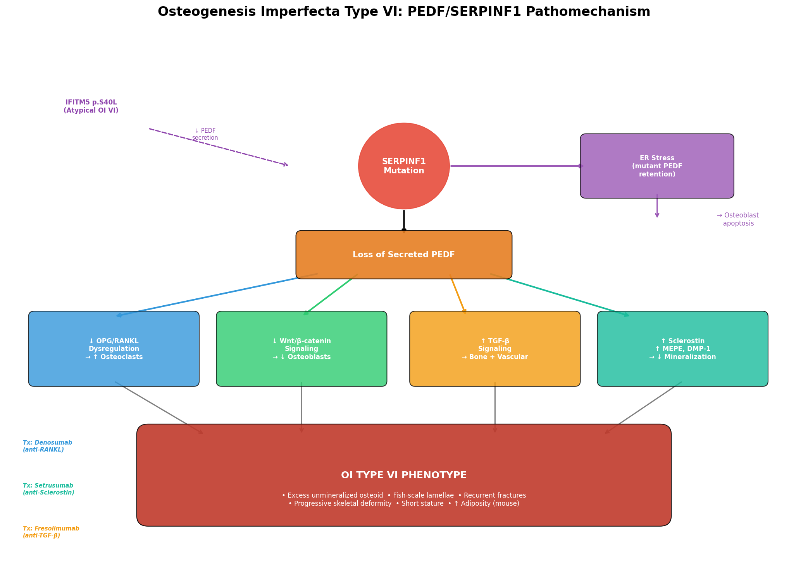
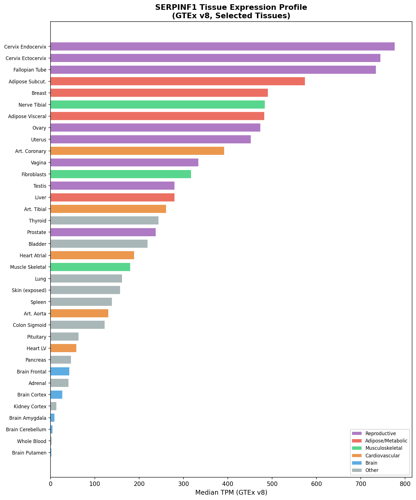
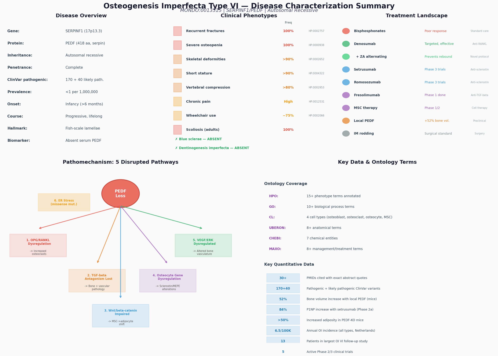

Osteogenesis Imperfecta Type VI
Osteogenesis imperfecta type VI (OI type VI) is a rare, moderate-to-severe autosomal recessive form of brittle bone disease caused by biallelic loss-of-function variants in SERPINF1, the gene encoding pigment epithelium-derived factor (PEDF). It was first delineated clinically and histologically by Glorieux and colleagues in 2002 as a distinct entity among patients previously classified as OI type IV, and the SERPINF1 cause was identified in 2011. Unlike the dominant collagen-related OI types (I-IV), type I collagen is structurally and biochemically normal in OI type VI; the disorder is instead a primary defect of bone matrix mineralization. Loss of secreted PEDF dysregulates bone remodeling on two fronts: it removes PEDF's restraint on RANKL-mediated osteoclastogenesis (increasing bone resorption) and its suppression of osteocyte sclerostin (impairing Wnt-dependent osteoblast function), producing an accumulation of unmineralized osteoid with a pathognomonic "fish-scale" lamellation pattern on polarized-light bone histology. Clinically, OI type VI is distinguished from other OI types by fractures that begin after birth (typically 4-18 months with the onset of weight-bearing), white or only faintly blue sclerae, the uniform absence of dentinogenesis imperfecta and hearing loss, and an elevated childhood serum alkaline phosphatase. Because the underlying lesion is increased resorption rather than impaired matrix synthesis, OI type VI responds poorly to bisphosphonates but well to the anti-RANKL monoclonal antibody denosumab — a mechanism-directed therapy. An atypical OI type VI phenotype can also arise from an IFITM5 (BRIL) mutation that impairs osteoblast PEDF secretion, confirming reduced PEDF as the proximate cause.
Ask OpenScientist
Ask a research question about Osteogenesis Imperfecta Type VI. OpenScientist will conduct autonomous deep research using the Disorder Mechanisms Knowledge Base and PubMed literature (typically 10-30 minutes).
Do not include personal health information in your question. Questions and results are cached in your browser's local storage.
Inheritance
1Show evidence (1 reference)
Pathophysiology
4Show evidence (4 references)
Show evidence (2 references)
Show evidence (4 references)
Show evidence (2 references)
Pathograph
Phenotypes
8Limbs 1
Show evidence (1 reference)
Musculoskeletal 4
Show evidence (1 reference)
Show evidence (1 reference)
Show evidence (1 reference)
Show evidence (1 reference)
Growth 1
Show evidence (1 reference)
Other 2
Show evidence (1 reference)
Show evidence (1 reference)
Genetic Associations
1Show evidence (2 references)
Medical Actions
4Show evidence (2 references)
Show evidence (2 references)
Show evidence (1 reference)
Show evidence (1 reference)
Source YAML
click to showname: Osteogenesis Imperfecta Type VI
creation_date: "2026-06-29T00:00:00Z"
category: Mendelian
disease_term:
preferred_term: Osteogenesis imperfecta type 6
term:
id: MONDO:0013515
label: osteogenesis imperfecta type 6
description: >-
Osteogenesis imperfecta type VI (OI type VI) is a rare, moderate-to-severe
autosomal recessive form of brittle bone disease caused by biallelic
loss-of-function variants in SERPINF1, the gene encoding pigment
epithelium-derived factor (PEDF). It was first delineated clinically and
histologically by Glorieux and colleagues in 2002 as a distinct entity among
patients previously classified as OI type IV, and the SERPINF1 cause was
identified in 2011. Unlike the dominant collagen-related OI types (I-IV), type
I collagen is structurally and biochemically normal in OI type VI; the disorder
is instead a primary defect of bone matrix mineralization. Loss of secreted
PEDF dysregulates bone remodeling on two fronts: it removes PEDF's restraint on
RANKL-mediated osteoclastogenesis (increasing bone resorption) and its
suppression of osteocyte sclerostin (impairing Wnt-dependent osteoblast
function), producing an accumulation of unmineralized osteoid with a
pathognomonic "fish-scale" lamellation pattern on polarized-light bone
histology. Clinically, OI type VI is distinguished from other OI types by
fractures that begin after birth (typically 4-18 months with the onset of
weight-bearing), white or only faintly blue sclerae, the uniform absence of
dentinogenesis imperfecta and hearing loss, and an elevated childhood serum
alkaline phosphatase. Because the underlying lesion is increased resorption
rather than impaired matrix synthesis, OI type VI responds poorly to
bisphosphonates but well to the anti-RANKL monoclonal antibody denosumab — a
mechanism-directed therapy. An atypical OI type VI phenotype can also arise from
an IFITM5 (BRIL) mutation that impairs osteoblast PEDF secretion, confirming
reduced PEDF as the proximate cause.
parents:
- Osteogenesis imperfecta
inheritance:
- name: Autosomal Recessive
description: >-
Autosomal recessive inheritance. Carrier parents are unaffected; OI type VI
is enriched in consanguineous families and founder populations.
inheritance_term:
preferred_term: Autosomal recessive inheritance
term:
id: HP:0000007
label: Autosomal recessive inheritance
evidence:
- reference: PMID:21353196
reference_title: "Exome sequencing identifies truncating mutations in human SERPINF1 in autosomal-recessive osteogenesis imperfecta."
supports: SUPPORT
evidence_source: HUMAN_CLINICAL
snippet: >-
Subsequently, we identified homozygosity for two different truncating
SERPINF1 mutations in two unrelated patients with OI and parental
consanguinity.
explanation: >-
Homozygous SERPINF1 mutations in patients with parental consanguinity
establish the autosomal recessive inheritance of OI type VI.
pathophysiology:
- name: SERPINF1 Loss of Function Abolishes PEDF Secretion
description: >-
Biallelic loss-of-function variants in SERPINF1 abolish secretion of pigment
epithelium-derived factor (PEDF), a secreted serpin-family glycoprotein
normally produced by osteoblasts and osteocytes. Most pathogenic alleles are
truncating (nonsense/frameshift) and eliminate the protein; rarer in-frame
deletions/insertions yield a misfolded PEDF that is retained in the
endoplasmic reticulum, triggering a stress response in osteoblastic cells.
Type I collagen is normal, distinguishing this from the collagen-related OI
types.
cell_types:
- preferred_term: osteoblast
term:
id: CL:0000062
label: osteoblast
biological_processes:
- preferred_term: endoplasmic reticulum stress response (in-frame variants)
term:
id: GO:0034976
label: response to endoplasmic reticulum stress
modifier: INCREASED
evidence:
- reference: PMID:21826736
reference_title: "Mutations in SERPINF1 cause osteogenesis imperfecta type VI."
supports: SUPPORT
evidence_source: HUMAN_CLINICAL
snippet: >-
We describe loss of function mutations in serpin peptidase inhibitor, clade
F, member 1 (SERPINF1) in two affected members of this family and in an
additional unrelated patient with OI type VI. SERPINF1 encodes pigment
epithelium-derived factor.
explanation: >-
Identifies biallelic SERPINF1 loss-of-function mutations encoding PEDF as
the cause of OI type VI.
- reference: PMID:21353196
reference_title: "Exome sequencing identifies truncating mutations in human SERPINF1 in autosomal-recessive osteogenesis imperfecta."
supports: SUPPORT
evidence_source: HUMAN_CLINICAL
snippet: >-
Collagen analyses with cultured dermal fibroblasts displayed no evidence
for impaired collagen folding, posttranslational modification, or
secretion.
explanation: >-
Confirms that type I collagen is normal in SERPINF1-related OI, establishing
a non-collagen disease mechanism distinct from OI types I-IV.
- reference: PMID:25868797
reference_title: "The effect of SERPINF1 in-frame mutations in osteogenesis imperfecta type VI."
supports: SUPPORT
evidence_source: IN_VITRO
snippet: >-
Two deletions (p.F277del and the deletion of SERPINF1 exon 5) were
associated with retention of PEDF in the endoplasmic reticulum and a stress
response in osteoblastic cells.
explanation: >-
Shows that in-frame SERPINF1 variants cause ER retention of PEDF and an
osteoblast ER stress response, an alternative route to PEDF deficiency.
- reference: PMID:24519609
reference_title: "A novel IFITM5 mutation in severe atypical osteogenesis imperfecta type VI impairs osteoblast production of pigment epithelium-derived factor."
supports: SUPPORT
evidence_source: IN_VITRO
snippet: >-
We identified a 25-year-old woman with severe OI whose dermal fibroblasts
and cultured osteoblasts displayed minimal secretion of PEDF, but whose
serum PEDF level was in the normal range.
explanation: >-
An IFITM5 (BRIL) mutation producing an OI type VI-like phenotype via
impaired osteoblast PEDF secretion confirms reduced PEDF as the proximate
cause of the OI type VI mineralization defect.
downstream:
- target: RANKL-Mediated Osteoclast Overactivation
description: >-
Loss of PEDF removes its upregulation of OPG and restraint of RANKL,
increasing osteoclastic bone resorption.
- target: Impaired Osteoblast Function and Defective Matrix Mineralization
description: >-
Loss of PEDF derepresses osteocyte sclerostin and disturbs Wnt-dependent
osteoblast function and matrix mineralization.
- name: RANKL-Mediated Osteoclast Overactivation
conforms_to: "osteoporosis_bone_resorption#Increased Osteoclastic Bone Resorption"
description: >-
PEDF normally upregulates osteoprotegerin (OPG) in osteoblasts and directly
inhibits RANKL-mediated osteoclast differentiation, survival, and resorptive
activity. In its absence the OPG:RANKL balance shifts toward RANKL, driving
osteoclast overactivation and increased bone resorption. This resorptive arm
is the rationale for the efficacy of the anti-RANKL antibody denosumab in OI
type VI, and it conforms to the conserved increased-osteoclastic-resorption
pattern.
cell_types:
- preferred_term: osteoclast
term:
id: CL:0000092
label: osteoclast
biological_processes:
- preferred_term: osteoclast differentiation
term:
id: GO:0030316
label: osteoclast differentiation
modifier: INCREASED
evidence:
- reference: PMID:19945427
reference_title: "PEDF regulates osteoclasts via osteoprotegerin and RANKL."
supports: SUPPORT
evidence_source: IN_VITRO
snippet: >-
OCL differentiation, RANKL-mediated survival and bone resorption activity
were inhibited by PEDF in a dose-dependent manner. PEDF upregulated
osteoprotegerin (OPG), which naturally blocks OCL maturation, in primary
osteoblasts and OCL precursor cells.
explanation: >-
Demonstrates that PEDF restrains osteoclast differentiation and resorption
via OPG upregulation and RANKL inhibition; loss of PEDF therefore increases
osteoclastic resorption.
- reference: PMID:25257953
reference_title: "Two years' experience with denosumab for children with osteogenesis imperfecta type VI."
supports: SUPPORT
evidence_source: HUMAN_CLINICAL
snippet: >-
The subgroup of patients with OI type VI are affected by an increased bone
resorption, leading to the same symptoms as observed in patients with an
impaired bone formation.
explanation: >-
Clinically frames OI type VI as a disorder of increased bone resorption,
the basis for anti-resorptive (denosumab) therapy.
downstream:
- target: Bone Fragility, Fractures, and Skeletal Deformity
description: >-
Excessive osteoclastic resorption reduces bone mass and contributes to
fragility and fractures.
- name: Impaired Osteoblast Function and Defective Matrix Mineralization
description: >-
PEDF suppresses osteocyte expression of sclerostin (SOST) and other
osteocyte genes through ERK/GSK-3beta/beta-catenin signaling, supporting
Wnt-dependent osteoblast function and orderly matrix mineralization. Without
PEDF, sclerostin is derepressed and Wnt signaling is disturbed, osteoblasts
fail to mineralize matrix normally, and unmineralized osteoid accumulates with
a prolonged mineralization lag time. The disorganized lamellae produce the
characteristic polarized-light "fish-scale" pattern.
cell_types:
- preferred_term: osteoblast
term:
id: CL:0000062
label: osteoblast
- preferred_term: osteocyte
term:
id: CL:0000137
label: osteocyte
biological_processes:
- preferred_term: regulation of osteoblast differentiation
term:
id: GO:0045667
label: regulation of osteoblast differentiation
modifier: DYSREGULATED
- preferred_term: canonical Wnt signaling pathway
term:
id: GO:0060070
label: canonical Wnt signaling pathway
modifier: DECREASED
- preferred_term: bone mineralization
term:
id: GO:0030282
label: bone mineralization
modifier: DECREASED
evidence:
- reference: PMID:30076958
reference_title: "Pigment epithelium derived factor regulates human Sost/Sclerostin and other osteocyte gene expression via the receptor and induction of Erk/GSK-3beta/beta-catenin signaling."
supports: SUPPORT
evidence_source: IN_VITRO
snippet: >-
LTD cells synthesized Sclerostin, matrix extracellular phosphoglycoprotein
(MEPE) and dentin matrix protein (DMP-1) and their synthesis was reduced by
treatment with PEDF.
explanation: >-
Shows PEDF suppresses osteocyte sclerostin (and MEPE, DMP-1); loss of PEDF
therefore derepresses sclerostin and impairs Wnt-dependent bone formation.
- reference: PMID:11771667
reference_title: "Osteogenesis imperfecta type VI: a form of brittle bone disease with a mineralization defect."
supports: SUPPORT
evidence_source: HUMAN_CLINICAL
snippet: >-
We conclude that type VI OI is a moderate to severe form of brittle bone
disease with accumulation of osteoid due to a mineralization defect, in the
absence of a disturbance of mineral metabolism.
explanation: >-
Establishes the defining lesion of OI type VI as osteoid accumulation from a
matrix mineralization defect with normal systemic mineral metabolism.
- reference: PMID:23413146
reference_title: "A mouse model for human osteogenesis imperfecta type VI."
supports: SUPPORT
evidence_source: MODEL_ORGANISM
snippet: >-
quantitative bone histomorphometry in femurs of mature Pedf null mutants
revealed reduced trabecular bone volume and the accumulation of
unmineralized bone matrix.
explanation: >-
The Pedf-null mouse recapitulates the human defect, showing accumulation of
unmineralized bone matrix and reduced trabecular bone.
- reference: PMID:27127101
reference_title: "Pigment epithelium-derived factor restoration increases bone mass and improves bone plasticity in a model of osteogenesis imperfecta type VI via Wnt3a blockade."
supports: SUPPORT
evidence_source: MODEL_ORGANISM
snippet: >-
In this study, PEDF delivery increased trabecular bone volume/total volume
by 52% in 6-mo-old PEDF-KO mice but not in wild-type mice.
explanation: >-
Restoring PEDF rescues bone mass in the OI type VI mouse model, confirming
PEDF deficiency as the driver of the bone phenotype and supporting PEDF
replacement as a therapeutic strategy.
downstream:
- target: Bone Fragility, Fractures, and Skeletal Deformity
description: >-
Defective mineralization and excess unmineralized osteoid yield
mechanically weak bone prone to fracture and deformity.
- name: Bone Fragility, Fractures, and Skeletal Deformity
description: >-
The convergence of increased osteoclastic resorption and defective osteoblast
matrix mineralization produces mechanically weak bone. Clinically this
manifests as recurrent fractures beginning after the onset of weight-bearing,
universal vertebral compression fractures, progressive long-bone deformity and
bowing, kyphoscoliosis, and short stature.
evidence:
- reference: PMID:11771667
reference_title: "Osteogenesis imperfecta type VI: a form of brittle bone disease with a mineralization defect."
supports: SUPPORT
evidence_source: HUMAN_CLINICAL
snippet: >-
Fractures were first documented between 4 and 18 months of age. Patients
with OI type VI sustained more frequent fractures than patients with OI type
IV.
explanation: >-
Documents the post-natal onset and high fracture burden that define the
clinical fragility of OI type VI.
- reference: PMID:21353196
reference_title: "Exome sequencing identifies truncating mutations in human SERPINF1 in autosomal-recessive osteogenesis imperfecta."
supports: SUPPORT
evidence_source: HUMAN_CLINICAL
snippet: >-
Fractures of long bones and severe vertebral compression fractures with
resulting deformities were observed as early as the first year of life in
these individuals.
explanation: >-
Documents long-bone fractures and severe vertebral compression fractures
with deformity in SERPINF1-mutant OI type VI patients.
genetic:
- name: SERPINF1 Loss-of-Function Mutations
association: Causative
gene_term:
preferred_term: SERPINF1 (PEDF)
term:
id: hgnc:8824
label: SERPINF1
notes: >-
Biallelic loss-of-function variants in SERPINF1 (17p13.3), encoding pigment
epithelium-derived factor (PEDF), cause OI type VI. Most are truncating
(nonsense/frameshift) null alleles; rarer in-frame deletions/insertions cause
ER retention of misfolded PEDF. SERPINF1-related OI is recessive with complete
penetrance for biallelic null alleles.
evidence:
- reference: PMID:21826736
reference_title: "Mutations in SERPINF1 cause osteogenesis imperfecta type VI."
supports: SUPPORT
evidence_source: HUMAN_CLINICAL
snippet: >-
Hence, loss of pigment epithelium-derived factor function constitutes a
novel mechanism for OI and shows its involvement in bone mineralization.
explanation: >-
Establishes SERPINF1/PEDF loss of function as the causative mechanism of OI
type VI.
- reference: PMID:21353196
reference_title: "Exome sequencing identifies truncating mutations in human SERPINF1 in autosomal-recessive osteogenesis imperfecta."
supports: SUPPORT
evidence_source: HUMAN_CLINICAL
snippet: >-
A single homozygous truncating mutation, affecting SERPINF1 on chromosome
17p13.3, that was embedded into a homozygous stretch of 2.99 Mb remained.
explanation: >-
Independent exome-sequencing identification of homozygous truncating
SERPINF1 mutations at 17p13.3 in recessive OI.
phenotypes:
- name: Recurrent Fractures
description: >-
Recurrent fragility fractures of the long bones, characteristically beginning
after birth with the onset of weight-bearing (4-18 months) rather than in
utero or at birth.
phenotype_term:
preferred_term: Recurrent fractures
term:
id: HP:0002757
label: Recurrent fractures
evidence:
- reference: PMID:11771667
reference_title: "Osteogenesis imperfecta type VI: a form of brittle bone disease with a mineralization defect."
supports: SUPPORT
evidence_source: HUMAN_CLINICAL
snippet: >-
Fractures were first documented between 4 and 18 months of age. Patients
with OI type VI sustained more frequent fractures than patients with OI type
IV.
explanation: >-
Documents recurrent fractures with characteristic post-natal onset in OI
type VI.
- name: Vertebral Compression Fractures
description: >-
Vertebral compression fractures are a universal feature, contributing to loss
of height and progressive spinal deformity.
phenotype_term:
preferred_term: Vertebral compression fracture
term:
id: HP:0002953
label: Vertebral compression fracture
evidence:
- reference: PMID:11771667
reference_title: "Osteogenesis imperfecta type VI: a form of brittle bone disease with a mineralization defect."
supports: SUPPORT
evidence_source: HUMAN_CLINICAL
snippet: >-
Sclerae were white or faintly blue and dentinogenesis imperfecta was
uniformly absent. All patients had vertebral compression fractures.
explanation: >-
All OI type VI patients in the original series had vertebral compression
fractures.
- name: Reduced Bone Mineral Density
description: >-
Low areal bone mineral density at the lumbar spine, reflecting the
mineralization defect and increased resorption.
phenotype_term:
preferred_term: Reduced bone mineral density
term:
id: HP:0004349
label: Reduced bone mineral density
evidence:
- reference: PMID:11771667
reference_title: "Osteogenesis imperfecta type VI: a form of brittle bone disease with a mineralization defect."
supports: SUPPORT
evidence_source: HUMAN_CLINICAL
snippet: >-
Lumbar spine areal bone mineral density (aBMD) was low and similar to
age-matched patients with OI type IV.
explanation: >-
Documents low lumbar-spine areal BMD in OI type VI.
- name: Elevated Serum Alkaline Phosphatase
description: >-
Childhood serum alkaline phosphatase is elevated relative to other OI types,
a useful biochemical clue reflecting the mineralization defect.
phenotype_term:
preferred_term: Elevated circulating alkaline phosphatase concentration
term:
id: HP:0003155
label: Elevated circulating alkaline phosphatase concentration
evidence:
- reference: PMID:11771667
reference_title: "Osteogenesis imperfecta type VI: a form of brittle bone disease with a mineralization defect."
supports: SUPPORT
evidence_source: HUMAN_CLINICAL
snippet: >-
Serum alkaline phosphatase levels were elevated compared with age-matched
patients with type IV OI (409 +/- 145 U/liter vs. 295 +/- 95 U/liter; p <
0.03 by t-test).
explanation: >-
Quantifies the elevated childhood serum alkaline phosphatase characteristic
of OI type VI.
- name: Defective Bone Mineralization with Osteoid Accumulation
category: Histology
description: >-
Iliac crest bone histology shows accumulation of unmineralized osteoid with a
prolonged mineralization lag time, and loss of the normal birefringent
lamellar pattern under polarized light, often producing a characteristic
"fish-scale" appearance — the histological hallmark of OI type VI.
phenotype_term:
preferred_term: Increased unmineralized osteoid ("fish-scale" lamellation)
term:
id: HP:0003330
label: Abnormal bone structure
evidence:
- reference: PMID:11771667
reference_title: "Osteogenesis imperfecta type VI: a form of brittle bone disease with a mineralization defect."
supports: SUPPORT
evidence_source: HUMAN_CLINICAL
snippet: >-
Qualitative histology of iliac crest bone biopsy specimens showed an absence
of the birefringent pattern of normal lamellar bone under polarized light,
often with a "fish-scale" pattern.
explanation: >-
Documents the pathognomonic loss of lamellar birefringence ("fish-scale"
pattern) reflecting defective mineralization in OI type VI.
- name: Short Stature
description: >-
Growth failure with short stature develops in childhood, often severe in more
affected individuals.
phenotype_term:
preferred_term: Short stature
term:
id: HP:0004322
label: Short stature
evidence:
- reference: PMID:21353196
reference_title: "Exome sequencing identifies truncating mutations in human SERPINF1 in autosomal-recessive osteogenesis imperfecta."
supports: SUPPORT
evidence_source: HUMAN_CLINICAL
snippet: >-
All four individuals with SERPINF1 mutations have severe OI.
explanation: >-
SERPINF1-mutant OI type VI is severe, with growth impairment among its
features; short stature is part of the severe skeletal phenotype.
- name: Kyphoscoliosis
description: >-
Progressive kyphoscoliosis develops as a consequence of recurrent vertebral
compression fractures and bone fragility.
phenotype_term:
preferred_term: Kyphoscoliosis
term:
id: HP:0002751
label: Kyphoscoliosis
clinical_course: PROGRESSIVE
evidence:
- reference: PMID:21353196
reference_title: "Exome sequencing identifies truncating mutations in human SERPINF1 in autosomal-recessive osteogenesis imperfecta."
supports: SUPPORT
evidence_source: HUMAN_CLINICAL
snippet: >-
Fractures of long bones and severe vertebral compression fractures with
resulting deformities were observed as early as the first year of life in
these individuals.
explanation: >-
Severe vertebral compression fractures with resulting deformities underlie
the progressive spinal deformity (kyphoscoliosis) of OI type VI.
- name: Bowing of the Long Bones
description: >-
Progressive bowing and deformity of the long bones from recurrent fractures
and mechanically weak bone.
phenotype_term:
preferred_term: Bowing of the long bones
term:
id: HP:0006487
label: Bowing of the long bones
clinical_course: PROGRESSIVE
evidence:
- reference: PMID:21353196
reference_title: "Exome sequencing identifies truncating mutations in human SERPINF1 in autosomal-recessive osteogenesis imperfecta."
supports: SUPPORT
evidence_source: HUMAN_CLINICAL
snippet: >-
Fractures of long bones and severe vertebral compression fractures with
resulting deformities were observed as early as the first year of life in
these individuals.
explanation: >-
Long-bone fractures with resulting deformities produce the progressive
bowing seen in OI type VI.
diagnosis:
- name: Clinical, Histological, and Molecular Diagnosis
description: >-
OI type VI is suspected from the OI phenotype combined with its distinguishing
features — post-natal fracture onset, white or faintly blue sclerae, absent
dentinogenesis imperfecta and hearing loss, and elevated childhood serum
alkaline phosphatase. Historically the diagnosis rested on the "fish-scale"
polarized-light pattern and hyperosteoidosis on iliac crest bone biopsy.
Since 2011, confirmation is by demonstrating biallelic SERPINF1 variants
(or undetectable serum PEDF), which distinguishes OI type VI from
collagen-related and other recessive OI forms.
diagnosis_term:
preferred_term: molecular genetic testing
term:
id: MAXO:0000533
label: molecular genetic testing
evidence:
- reference: PMID:11771667
reference_title: "Osteogenesis imperfecta type VI: a form of brittle bone disease with a mineralization defect."
supports: SUPPORT
evidence_source: HUMAN_CLINICAL
snippet: >-
Qualitative histology of iliac crest bone biopsy specimens showed an absence
of the birefringent pattern of normal lamellar bone under polarized light,
often with a "fish-scale" pattern.
explanation: >-
The "fish-scale" polarized-light histology is the classic diagnostic finding
that originally defined OI type VI.
- reference: PMID:21826736
reference_title: "Mutations in SERPINF1 cause osteogenesis imperfecta type VI."
supports: SUPPORT
evidence_source: HUMAN_CLINICAL
snippet: >-
We describe loss of function mutations in serpin peptidase inhibitor, clade
F, member 1 (SERPINF1) in two affected members of this family and in an
additional unrelated patient with OI type VI. SERPINF1 encodes pigment
epithelium-derived factor.
explanation: >-
Identification of SERPINF1 enables molecular confirmation of OI type VI.
treatments:
- name: Denosumab (Anti-RANKL Antibody)
description: >-
Denosumab, a monoclonal antibody against RANKL, directly targets the increased
osteoclastic bone resorption that drives OI type VI, and is the
mechanism-directed treatment of choice. In children with OI type VI, two years
of denosumab increased bone mineral density, normalized vertebral shape,
improved mobility, and reduced fracture rate. The short-acting,
reversible anti-resorptive effect carries a rebound risk: abrupt
discontinuation or end-of-interval offset can cause hyper-resorptive
rebound with symptomatic hypercalcemia, which can be mitigated by
alternating denosumab with a long-acting bisphosphonate (zoledronic acid).
therapeutic_modality: MONOCLONAL_ANTIBODY
treatment_term:
preferred_term: Pharmacotherapy
term:
id: NCIT:C15986
label: Pharmacotherapy
therapeutic_agent:
- preferred_term: denosumab
term:
id: NCIT:C61313
label: Denosumab
evidence:
- reference: PMID:25257953
reference_title: "Two years' experience with denosumab for children with osteogenesis imperfecta type VI."
supports: SUPPORT
evidence_source: HUMAN_CLINICAL
snippet: >-
We now present the results after 2 years of treatment and demonstrate a long
term benefit as well as an increase of bone mineral density, a normalization
of vertebral shape, an increase of mobility, and a reduced fracture rate.
explanation: >-
Two-year clinical data show denosumab improves BMD, vertebral shape,
mobility, and fracture rate in OI type VI.
- reference: PMID:36867194
reference_title: "Mitigating the Denosumab-Induced Rebound Phenomenon with Alternating Short- and Long-Acting Anti-resorptive Therapy in a Young Boy with Severe OI Type VI."
supports: SUPPORT
evidence_source: HUMAN_CLINICAL
snippet: >-
After two years on denosumab, he presented with symptomatic hypercalcemia
due to the denosumab-induced, hyper-resorptive rebound phenomenon.
explanation: >-
Documents the denosumab rebound phenomenon (symptomatic hypercalcemia) in
OI type VI and motivates the alternating long-acting bisphosphonate strategy
to mitigate it.
- name: Bisphosphonate Therapy (Limited Efficacy)
description: >-
Intravenous bisphosphonates are standard for most OI types, but OI type VI
responds poorly because the lesion is increased resorption acting on
unmineralized osteoid rather than impaired bone formation; denosumab is
preferred.
treatment_term:
preferred_term: bisphosphonate agent therapy
term:
id: MAXO:0000954
label: bisphosphonate agent therapy
evidence:
- reference: PMID:25257953
reference_title: "Two years' experience with denosumab for children with osteogenesis imperfecta type VI."
supports: SUPPORT
evidence_source: HUMAN_CLINICAL
snippet: >-
Patients with OI type VI are known to have a poor response to such a
bisphosphonate treatment.
explanation: >-
Documents the characteristically poor bisphosphonate response in OI type VI,
motivating anti-RANKL therapy instead.
- reference: PMID:28689307
reference_title: "Long-term follow-up in osteogenesis imperfecta type VI."
supports: PARTIAL
evidence_source: HUMAN_CLINICAL
snippet: >-
patients who received intravenous bisphosphonate treatment had an increase
in lumbar spine areal bone mineral density, a higher final height z-score,
and some reshaping of vertebral bodies
explanation: >-
Long-term data show bisphosphonates produce only partial benefit (some BMD,
height, and vertebral-shape improvement) in OI type VI, consistent with
limited efficacy relative to anti-resorptive denosumab.
- name: Orthopedic Surgery and Intramedullary Rodding
description: >-
Intramedullary (telescoping) rod fixation and corrective osteotomy stabilize
and realign deformed, fracture-prone long bones; spinal stabilization may be
needed for progressive kyphoscoliosis.
treatment_term:
preferred_term: surgical procedure
term:
id: MAXO:0000004
label: surgical procedure
evidence:
- reference: PMID:21353196
reference_title: "Exome sequencing identifies truncating mutations in human SERPINF1 in autosomal-recessive osteogenesis imperfecta."
supports: SUPPORT
evidence_source: HUMAN_CLINICAL
snippet: >-
Fractures of long bones and severe vertebral compression fractures with
resulting deformities were observed as early as the first year of life in
these individuals.
explanation: >-
The long-bone fractures and resulting deformities documented in OI type VI
are the indication for intramedullary rodding and corrective orthopedic
surgery.
- name: Physical Therapy and Rehabilitation
description: >-
Physiotherapy, safe strengthening and mobility training (including
hydrotherapy to minimize fracture risk), and adaptive aids preserve function
and mobility.
treatment_term:
preferred_term: physical therapy
term:
id: MAXO:0000011
label: physical therapy
evidence:
- reference: PMID:25257953
reference_title: "Two years' experience with denosumab for children with osteogenesis imperfecta type VI."
supports: SUPPORT
evidence_source: HUMAN_CLINICAL
snippet: >-
We now present the results after 2 years of treatment and demonstrate a long
term benefit as well as an increase of bone mineral density, a normalization
of vertebral shape, an increase of mobility, and a reduced fracture rate.
explanation: >-
Improved mobility with treatment underscores the role of rehabilitation in
preserving function in OI type VI.
datasets: []
references:
- reference: PMID:11771667
title: "Osteogenesis imperfecta type VI: a form of brittle bone disease with a mineralization defect."
- reference: PMID:21826736
title: "Mutations in SERPINF1 cause osteogenesis imperfecta type VI."
- reference: PMID:21353196
title: "Exome sequencing identifies truncating mutations in human SERPINF1 in autosomal-recessive osteogenesis imperfecta."
- reference: PMID:19945427
title: "PEDF regulates osteoclasts via osteoprotegerin and RANKL."
- reference: PMID:30076958
title: "Pigment epithelium derived factor regulates human Sost/Sclerostin and other osteocyte gene expression via the receptor and induction of Erk/GSK-3beta/beta-catenin signaling."
- reference: PMID:27127101
title: "Pigment epithelium-derived factor restoration increases bone mass and improves bone plasticity in a model of osteogenesis imperfecta type VI via Wnt3a blockade."
- reference: PMID:23413146
title: "A mouse model for human osteogenesis imperfecta type VI."
- reference: PMID:25868797
title: "The effect of SERPINF1 in-frame mutations in osteogenesis imperfecta type VI."
- reference: PMID:24519609
title: "A novel IFITM5 mutation in severe atypical osteogenesis imperfecta type VI impairs osteoblast production of pigment epithelium-derived factor."
- reference: PMID:25257953
title: "Two years' experience with denosumab for children with osteogenesis imperfecta type VI."
- reference: PMID:28689307
title: "Long-term follow-up in osteogenesis imperfecta type VI."
- reference: PMID:36867194
title: "Mitigating the Denosumab-Induced Rebound Phenomenon with Alternating Short- and Long-Acting Anti-resorptive Therapy in a Young Boy with Severe OI Type VI."
References & Deep Research
References
12Deep Research
21. Disease Information
Overview
Osteogenesis Imperfecta Type VI (OI6) is an extremely rare, severe autosomal recessive skeletal dysplasia characterized by bone fragility and a distinctive mineralization defect, caused by loss-of-function mutations in the SERPINF1 gene encoding pigment epithelium-derived factor (PEDF). It was first delineated by Glorieux et al. in 2002 as a group of patients initially classified as OI type IV who share a unique set of clinical, histological, and biochemical features not explained by collagen structural defects (PMID: 11771665). Unlike the classical dominant OI types (I–IV), OI type VI is distinguished by normal type I collagen, an absence of dentinogenesis imperfecta and hearing loss, and the pathognomonic "fish-scale" lamellar pattern observed by polarized-light bone histomorphometry. Fewer than 50 cases have been reported in the world literature.
Key Identifiers
| Resource | Identifier |
|---|---|
| OMIM | #613982 (OI6) / 613982 (SERPINF1 OMIM Gene) |
| Orphanet | ORPHA:216804 |
| MONDO | MONDO:0013515 |
| MeSH | C567088 |
| ICD-10 | Q78.0 (Osteogenesis imperfecta) |
| ICD-11 | LD24.10 |
| SERPINF1 HGNC | HGNC:8824 |
| SERPINF1 locus | Chromosome 17p13.3 |
Synonyms and Alternative Names
- OI Type VI
- Osteogenesis imperfecta with mineralization defect
- OI6
- Brittle bone disease type VI
- Pigment epithelium-derived factor (PEDF) deficiency
2. Etiology
Primary Disease Cause
OI type VI is caused exclusively by biallelic loss-of-function variants in SERPINF1 (chromosome 17p13.3), which encodes the secreted glycoprotein pigment epithelium-derived factor (PEDF). All disease-causing alleles reported to date result in complete or near-complete abolition of PEDF secretion. Unlike OI types I–IV, the type I collagen genes (COL1A1, COL1A2) are structurally normal. PEDF's roles in bone homeostasis—inhibiting osteoclastogenesis, promoting osteoblast differentiation, and regulating mineralization—are thus disrupted (PMID: 21826736; PMID: 24523041).
Genetic Risk Factors
- Autosomal recessive inheritance: Both parents are obligate heterozygous carriers. The recurrence risk for sibling offspring of carrier couples is 25% per pregnancy.
- Consanguinity: OI type VI is enriched in consanguineous populations. In a large Indian cohort, SERPINF1 variants accounted for approximately 12.5% of the autosomal recessive OI population, attributable to higher background rates of consanguinity (PMC10323215).
- Founder mutations: A 5-bp duplication in exon 3 of SERPINF1, c.261_265dup (p.Leu89Argfs26), exhibits a strong founder effect in the Tuvan population* of Southern Siberia, with an estimated carrier frequency of 1:114 and disease prevalence of approximately 1:52,375 in that isolate (PMC12250282).
- No known genetic modifier genes significantly altering OI6 penetrance or expressivity have been identified. Penetrance is complete for biallelic null alleles.
Environmental Risk Factors
No environmental factors have been shown to cause or substantially modify OI type VI risk, which is monogenic. However: - Calcium and vitamin D insufficiency can worsen the already-poor bone mineralization phenotype and exacerbate fracture burden. - Physical trauma from standing and ambulation precipitates the first fractures (onset 4–18 months).
3. Phenotypes
Clinical Phenotype Summary
OI type VI presents with a characteristically moderate-to-severe and progressive skeletal phenotype. The defining clinical features that distinguish it from other OI types include the absence of fractures at birth, absence of dentinogenesis imperfecta, normal or faintly blue (not deep blue) sclerae, and absent sensorineural hearing loss (PMID: 11771665; PMC12250282).
| Phenotype | HP Term | Frequency | Onset | Severity | Notes |
|---|---|---|---|---|---|
| Recurrent fractures | HP:0002757 | Universal (100%) | Infant (4–18 mo) | Severe (8–200 fractures lifetime) | Not present at birth |
| Short stature | HP:0004322 | Universal (100%) | Childhood | Severe (Z-scores −2.7 to −7.7) | |
| Vertebral compression fractures | HP:0002953 | Universal (100%) | Childhood | Severe | All patients in case series |
| Long bone deformity / bowing | HP:0002982 | Very frequent | Childhood | Severe–very severe | Multilevel, multiplanar |
| Kyphoscoliosis | HP:0002751 | Very frequent | Childhood | Moderate–severe | Up to grade IV |
| Bell-shaped thorax / thin ribs | HP:0000774 | Frequent | Childhood | — | |
| Muscular hypotonia | HP:0001290 | Frequent | Infancy | — | |
| Reduced bone mineral density | HP:0004349 | Universal (100%) | Childhood | Z-scores −1.7 to −4.6 | |
| White or faintly blue sclerae | HP:0000953 | Universal | At birth | — | Deep blue absent |
| Absent dentinogenesis imperfecta | HP:0000668 (absent) | Universal | — | — | Key negative feature |
| Absent hearing loss | HP:0000407 (absent) | Universal | — | — | Key negative feature |
| Motor developmental delay | HP:0001270 | Frequent | Infancy | — | Delayed independent sitting/walking |
| Loss of independent ambulation | — | Frequent–universal | Childhood | — | All patients in one case series |
Biochemical phenotypes: - Elevated serum alkaline phosphatase (ALP): ALPL levels in children with OI6 are elevated compared with age-matched OI type IV patients (409 ± 145 U/L vs. 295 ± 95 U/L; PMID: 11771665). HP:0003155 (Elevated alkaline phosphatase) - Undetectable serum PEDF: Circulating PEDF (~100 nM in normal individuals) is completely absent or dramatically reduced in OI6 patients (PMID: 21826736). This is pathognomonic.
Histopathology phenotype: - Fish-scale lamellar pattern (polarized light): Bone biopsy reveals an irregular "fish-scale" arrangement of bone lamellae visible under polarized light microscopy — the histological hallmark of OI6, not seen in other OI types (PMID: 11771665; PMID: 25554599). - Increased osteoid volume: Excessive unmineralized osteoid accumulates, reflecting a prolonged mineral lag time and impaired matrix mineralization. - Increased osteocyte number - Coexistence of hypermineralized zones and hypomineralized osteoid seams at nano-scale (PMID: 25554599): unusual heterogeneous mineral particle population.
Quality of Life Impact
OI type VI severely impairs quality of life. All patients in published series lose independent ambulation; 2 of 4 patients in the Tuvan cohort never achieved unsupported sitting (PMC12250282). Progressive spinal deformities cause pain, respiratory compromise, and loss of balance. BAMF and GMFM mobility scores are low and tend to stabilize or marginally improve only with aggressive anti-resorptive therapy (PMC4180531).
4. Genetic and Molecular Information
Causal Gene: SERPINF1 (HGNC:8824)
SERPINF1 encodes the 418-amino-acid secreted glycoprotein PEDF (pigment epithelium-derived factor), a member of the non-inhibitory serpin superfamily. The protein contains a collagen-binding domain (N-terminal region), an antiangiogenic domain, and a neurotrophic domain. PEDF is ubiquitously expressed but particularly abundant in bone (osteoblasts, osteocytes), eye (retinal pigment epithelium), and liver (PMID: 21826736).
- Gene locus: 17p13.3
- RefSeq mRNA: NM_002615.6
- UniProt: P36955
Pathogenic Variant Types
All OI6-causing variants result in loss of function (PEDF absent from serum). Variant types include:
| Variant | Type | Exon | Effect | Population | Reference |
|---|---|---|---|---|---|
| c.295C>T (p.R99X) | Nonsense | 4 | NMD; <6% transcript remaining | French-Canadian | PMID:21826736 |
| c.10440_10443dupATCA (p.H389fsX392) | Frameshift | 8 | Premature stop | Italian | PMID:21826736 |
| c.261_265dup (p.Leu89Argfs*26) | Frameshift | 3 | Loss of function | Tuvan (founder) | PMC12250282 |
| c.185G>T (p.Gly62Val) | Missense | 3 | Likely pathogenic | Various | PMC12250282 |
| c.992_993insCA (p.Glu331Asnfs) | Frameshift insertion | — | Truncation (86 aa loss); no NMD | Various | PMC12250282 |
| Intronic cryptic splice site (intron 4, AGGC→AGGT) | Splice site | Intron 4 | Aberrant splicing → loss of function | Various | PMC6124173 |
| Homozygous in-frame deletions/missenses (e.g., p.Val356Glu; p.Ala96_Gly215del) | Missense / large del | Various | Protein misfolded; ER retention | Chinese families | PMID:25868797 |
- Variant classification: All definitively pathogenic variants are autosomal recessive. De novo variants are not described; both parents are obligate carriers.
- Allele frequency (gnomAD): Individual SERPINF1 LOF alleles are individually very rare (heterozygous allele frequency typically <0.001); compound heterozygosity is common outside founder populations.
- Origin: Germline; somatic OI6 not described.
- Functional consequence: Null mutations → nonsense-mediated decay or premature stop → absent PEDF protein. Missense/in-frame variants → protein misfolding → ER retention → ER stress → no secreted protein (PMID:25868797; ScienceDirect article on ER stress 2025).
Modifier Genes / Epigenetics
No well-validated modifier genes for OI6 expressivity have been identified. Notably, a rare IFITM5 S40L mutation (causing OI type V) paradoxically reduces PEDF secretion from osteoblasts, producing an "atypical OI type VI" phenotype—demonstrating that PEDF reduction is the proximate cause rather than SERPINF1 genotype per se (PMID:24523041). Epigenetic contributions are not established for OI6.
5. Environmental Information
No environmental factors are causal in OI type VI, which is an entirely monogenic condition. Environmental modifiers of clinical severity include: - Physical trauma and weight-bearing: The onset of fractures coincides with early ambulation (4–18 months), indicating that mechanical loading precipitates fractures in the setting of extreme bone fragility. - Calcium and vitamin D intake: Suboptimal calcium/vitamin D worsens the mineralization defect. All published treatment protocols include calcium (500–1000 mg/day) and vitamin D supplementation alongside pharmacotherapy (PMC4180531). - Immobilization: Prolonged immobilization after fractures accelerates bone resorption and worsens osteopenia, creating a vicious cycle.
6. Mechanism / Pathophysiology
Overview of Pathogenic Cascade
The fundamental mechanism of OI6 is absence of secreted PEDF, leading to dysregulated bone remodeling, defective matrix mineralization, and excessive osteoid accumulation. PEDF normally exerts multiple protective effects in bone:
6a. RANKL/OPG Axis: Osteoclast Overactivation
PEDF normally upregulates osteoprotegerin (OPG) expression in osteoblasts, thereby inhibiting RANKL-mediated osteoclast differentiation and activation. PEDF also directly antagonizes RANKL-mediated cell survival signals in osteoclast precursors (PMID:19945427). In the absence of PEDF, the OPG:RANKL ratio is shifted toward RANKL, promoting osteoclastogenesis and excessive bone resorption. This explains the limited efficacy of bisphosphonates (which require mineralized bone matrix for deposition) and the superior efficacy of denosumab (anti-RANKL monoclonal antibody) in OI6 (PMC4180531).
- GO process: GO:0030316 (osteoclast differentiation)
- GO process: GO:0060352 (cell adhesion molecule production involved in inflammatory response) — secondary
- CL terms: CL:0000092 (osteoclast), CL:0000062 (osteoblast)
6b. SOST/Sclerostin Dysregulation: Impaired Osteoblast Differentiation
PEDF suppresses expression of SOST (encoding sclerostin) and other osteocyte-associated genes (MEPE, DMP1) in osteocytes via ERK/GSK-3β/β-catenin signaling. ERK activation by PEDF inactivates GSK-3β, stabilizing β-catenin and permitting nuclear Wnt target gene activation to support osteoblastogenesis. Without PEDF, sclerostin is overexpressed, Wnt signaling is inhibited, and osteoblast gene expression (RUNX2, osteocalcin, BSP, COL1A1*) is reduced (PMID:30076958; PMID:30607618).
- GO process: GO:0060070 (canonical Wnt signaling pathway)
- GO process: GO:0010832 (negative regulation of myotube differentiation) — adjacent
- Cell type: CL:0000137 (osteocyte)
6c. Wnt3a Antagonism at Terminal Osteoblast Differentiation
PEDF blocks LRP6 (a Wnt co-receptor), suppressing Wnt3a signaling at the late stage of osteoblast differentiation. Continuous Wnt3a exposure at this stage paradoxically reduces mineralization by 40%. PEDF therefore acts as a context-dependent Wnt inhibitor at terminal differentiation, and its absence unleashes inappropriate Wnt3a activity that disrupts the osteoblast-to-osteocyte transition and the initiation of matrix mineralization (PMC4970601). This explains the increased osteoid (unmineralized matrix) with architecturally abnormal lamellae.
- GO process: GO:0030282 (bone mineralization)
- GO process: GO:0043062 (extracellular structure organization)
6d. PEDF-TGF-β Antagonism
PEDF functionally antagonizes TGF-β signaling. Loss of PEDF leads to activated TGF-β signaling in osteoblasts, which delays osteoblast maturation and ECM mineralization while simultaneously stimulating pro-angiogenic factors (e.g., VEGF). In the Serpinf1−/− mouse model, TGF-β stimulation and PEDF deficiency produce additive suppression of osteogenic markers (Kang et al. 2022, JBMR, PMID:35212013). This provides a rationale for combined PEDF replacement + TGF-β antibody therapeutic strategies. Increased angiogenesis may also contribute to the structural vascular pathogenesis.
- GO process: GO:0007179 (TGF-β receptor signaling pathway)
- GO process: GO:0001525 (angiogenesis)
6e. ER Stress / Autophagy (In-Frame / Missense Variants)
For patients harboring in-frame or missense SERPINF1 mutations (rather than truncating null alleles), mutant PEDF protein is synthesized but retained in the endoplasmic reticulum due to misfolding. This triggers ER stress and the unfolded protein response (UPR), activating ER-associated degradation (ERAD) and autophagy as compensatory mechanisms (ScienceDirect 2025, PMID forthcoming). The net result is osteoblast apoptosis and impaired differentiation, convergent on the same downstream phenotype. ER stress and autophagy pathways are emerging as therapeutic targets for SERPINF1 missense-variant OI6.
- GO process: GO:0034976 (response to endoplasmic reticulum stress)
- GO process: GO:0006914 (autophagy)
6f. Anti-Adipogenic / Anti-Angiogenic Functions
PEDF inhibits adipogenesis (binding adipose triglyceride lipase, suppressing PPARγ). In the Serpinf1−/− mouse, total body adiposity increases by ~50%, suggesting PEDF-null OI6 may have altered mesenchymal stem cell fate allocation (reduced osteoblast, increased adipocyte differentiation from bone marrow progenitors) (PMC8755987).
Summary Causal Chain
Biallelic SERPINF1 LOF mutations
↓
Absent PEDF in circulation and bone ECM
↓
[Branch A] ↓OPG, ↑RANKL → Osteoclast overactivation → Excessive bone resorption
[Branch B] ↑Sclerostin → ↓Wnt signaling → Impaired osteoblast differentiation
[Branch C] ↑Wnt3a at terminal differentiation → Disrupted osteoblast-osteocyte transition
[Branch D] ↑TGF-β signaling → Delayed osteoblast maturation + ↑pro-angiogenic factors
[Branch E] (Missense only) ER retention of PEDF → ER stress → Osteoblast apoptosis
↓ (convergence)
Defective ECM mineralization + Excess unmineralized osteoid + Structural lamellar disorganization
↓
Fish-scale lamellation pattern; elevated ALP; absent serum PEDF
↓
Bone fragility → Fractures, deformity, short stature, kyphoscoliosis
Tissue / Cell Types Involved
| Cell Type | CL Term | Role |
|---|---|---|
| Osteoblast | CL:0000062 | Primary cell with SERPINF1 expression; fails to secrete PEDF; impaired differentiation/mineralization |
| Osteocyte | CL:0000137 | Overexpresses sclerostin in absence of PEDF |
| Osteoclast | CL:0000092 | Overactivated due to altered RANKL/OPG ratio |
| Mesenchymal stem cell | CL:0000134 | Skewed toward adipogenic fate when PEDF absent |
| Bone marrow stromal cell | CL:0002092 | Source of osteoblast precursors |
Anatomical Structures Affected (UBERON)
| Structure | UBERON | Involvement |
|---|---|---|
| Long bone (femur, tibia, humerus) | UBERON:0002203 | Fractures, bowing, deformity |
| Vertebra | UBERON:0001130 | Compression fractures, kyphoscoliosis |
| Rib | UBERON:0002228 | Thin ribs, bell-shaped thorax |
| Cortical bone | UBERON:0001481 | Abnormal lamellar organization |
| Trabecular bone | UBERON:0005401 | Reduced volume, increased osteoid |
| Sclerae | UBERON:0000952 | White/faintly blue |
| Bone marrow | UBERON:0002371 | Altered progenitor cell fate |
7. Anatomical Structures Affected
See detailed summary in section 6 (Mechanism). Briefly:
- Primary: Long bones (bilateral), vertebral column (multilevel compression fractures), thoracic cage (thin ribs, bell-shaped chest), bone extracellular matrix
- Secondary: Respiratory function (from thoracic restriction and kyphoscoliosis); neuromuscular function (hypotonia, motor delay)
- Subcellular: Endoplasmic reticulum (ER retention of missense PEDF), extracellular matrix (excessive osteoid accumulation)
The eye (retinal pigment epithelium, where PEDF was originally discovered) is not clinically affected in OI6 despite high PEDF expression there.
8. Temporal Development
Onset
- Perinatal/neonatal period: No fractures at birth (important distinguishing feature from OI types II/III). Skeletal appearance is normal at birth.
- Infancy (4–18 months): Fractures begin with the onset of weight-bearing and ambulation. This is the canonical age-of-onset for OI6 (PMID: 11771665; PMC12250282).
- Early childhood: Progressive long bone deformities, vertebral compression fractures; growth retardation becomes apparent.
Progression
OI6 follows a relentlessly progressive clinical course: - Fracture burden accumulates over childhood (reported range: 8–200 total fractures across published patients, PMC12250282). - Skeletal deformities worsen progressively: bowing of long bones becomes multiplanar, vertebral compression fractures lead to loss of height, kyphoscoliosis progresses and may require surgical stabilization in adolescence. - Mobility generally decreases: all affected patients in one cohort eventually lost independent ambulation; 2 of 4 never achieved unsupported sitting. - No spontaneous remission occurs; disease is lifelong and progressive without intervention.
Disease Stage Patterns
| Stage | Approximate Age | Key Events |
|---|---|---|
| Pre-fracture | 0–6 months | Normal at birth; no clinical signs |
| Fracture onset | 4–18 months | First fractures with standing/walking |
| Early progressive | 2–10 years | Accumulating fractures; deformity; vertebral compression |
| Severe deformity | 10–20 years | Kyphoscoliosis; wheelchair dependence; growth failure |
| Adult | >20 years | Fixed deformities; continued fracture risk; chronic pain |
9. Inheritance and Population
Inheritance
- Autosomal recessive (AR)
- Penetrance is complete for confirmed biallelic null alleles
- Expressivity: Variable (8–200 lifetime fractures in published cases); may partly reflect variant type (null vs. missense), genetic background, and treatment access
- No genetic anticipation (not a trinucleotide repeat disorder)
- Consanguinity: A significant risk factor; many published cases involve consanguineous parents
Epidemiology
| Metric | Value | Source |
|---|---|---|
| Overall OI prevalence | ~1:10,000–20,000 | Orphanet |
| OI6 global prevalence | Extremely rare; <50 cases reported | PMC12250282 |
| OI6 Tuvan population prevalence | ~1:52,375 | PMC12250282 |
| Carrier frequency (Tuvan, c.261_265dup) | 1:114 (0.0044) | PMC12250282 |
| OI6 fraction of AR-OI in India | ~12.5% of AR-OI | PMC10323215 |
| Sex ratio | Not established; M=F expected (AR) | — |
Population Demographics
- Global: Reported in patients from France, Italy, Russia (Tuva), India, Korea, China, Ecuador, Middle East, and North Africa — no single ethnic group predominates globally.
- Tuvan population (Southern Siberia): Strong founder effect (c.261_265dup); likely the highest known local prevalence due to long-term population isolation (PMC12250282).
- Indian subcontinent: Disproportionately represented among AR-OI cohorts, likely due to consanguinity rates (PMC10323215).
- Age distribution: A pediatric disease. Most reported patients are children/adolescents; adult cases documented but rare.
10. Diagnostics
Clinical Diagnostic Criteria
OI6 was originally distinguished from type IV OI by the combination of (PMID: 11771665): 1. Fractures first documented between 4 and 18 months 2. Absence of fractures at birth 3. White or faintly blue sclerae (not deep blue) 4. Absence of dentinogenesis imperfecta 5. Absence of sensorineural hearing loss 6. Very short stature 7. Elevated serum alkaline phosphatase (in childhood) 8. Histological fish-scale lamellar pattern on bone biopsy under polarized light
After 2011, genetic confirmation by SERPINF1 sequencing or serum PEDF measurement became the gold-standard confirmatory test, superseding bone biopsy for most cases.
Laboratory Tests
| Test | Finding | Clinical Significance | LOINC |
|---|---|---|---|
| Serum alkaline phosphatase | Elevated in childhood (mean 409 U/L) | Biochemical marker; reflects defective mineralization | LOINC:6768-6 |
| Serum PEDF | Undetectable (vs. ~100 nM normal) | Pathognomonic; distinguishes OI6 from all other OI types | — |
| Serum calcium | Usually normal | Rules out primary hypocalcemia | LOINC:17861-6 |
| Serum phosphate | Usually normal | Rules out hypophosphatemia/rickets | LOINC:2777-1 |
| Urinary bone resorption markers (CTX, NTX) | Elevated | Reflects osteoclast overactivity; used to guide denosumab dosing intervals | LOINC:48407-7 |
| Dual-energy X-ray absorptiometry (DXA) | Low lumbar spine Z-score (−1.7 to −4.6) | Quantifies bone mineral density deficit | — |
Bone Biopsy (Histopathology)
- Iliac crest bone biopsy under tetracycline double-labeling reveals:
- Increased osteoid thickness
- Prolonged osteoid maturation time (increased mineral lag time)
- Fish-scale lamellar pattern under polarized light (irregularly alternating bright/dark lamellae with rotational disorder)
- Increased osteocyte density
- Decreased mineralized bone volume per tissue volume
- HP:0011001 (Increased bone mineral density) does not apply; rather HP:0004349 (Decreased bone mineral density) combined with unique histology
Genetic Testing
- First-line: Next-generation sequencing gene panel including SERPINF1 (along with other AR-OI genes: CRTAP, LEPRE1/P3H1, PPIB, SERPINH1, FKBP10, SP7, TMEM38B, SEC24D, etc.)
- Whole-exome sequencing (WES): Recommended for atypical presentations; identifies cryptic splice variants (PMC6124173)
- Whole-genome sequencing (WGS): Can detect deep intronic variants and complex structural variants if panel/WES non-diagnostic
- Single-gene Sanger sequencing: Used for targeted confirmation of identified variants; for family screening of known mutations
- Molecular confirmation is essential: the fish-scale biopsy pattern, while characteristic, requires expertise and is increasingly replaced by genetic/PEDF testing
Differential Diagnosis
| Condition | Distinguishing Features |
|---|---|
| OI type III (COL1A1/A2) | Deep blue sclerae; dentinogenesis imperfecta; fractures at birth; collagen abnormal |
| OI type IV (COL1A1/A2) | Mild blue sclerae; variable DI; fractures often present at birth; collagen abnormal |
| OI type V (IFITM5) | Hyperplastic callus; interosseous membrane calcification; white sclerae; history-based |
| X-linked hypophosphatemic rickets | Hypophosphatemia; normal PEDF; no fish-scale pattern |
| Nutritional rickets / osteomalacia | Responds to Vitamin D; normal genetics |
| Atypical OI type V with PEDF reduction (IFITM5 S40L) | Rare overlap; has BRIL protein abnormality; OI type V features also present |
11. Outcome / Prognosis
Long-Term Course
OI type VI follows a severe-to-very severe progressive course, with cumulative fractures and skeletal deformities. In the largest published follow-up cohort, all patients sustained progressive deformities despite intervention; complete cessation of fractures was not achieved (PMID:28689307).
Key outcome data from published series: - Fracture burden: 0.8–8.69 fractures/year across patients; cumulative lifetime fractures 12–200 (PMC12250282) - Mobility: All patients in one series lost independent ambulation; functional stabilization achievable with aggressive pharmacotherapy - Height: Final height severely reduced (Z-scores −2.7 to −7.7 SD); some height gain with denosumab treatment (5–8 cm over 2 years, PMC4180531) - Vertebral morphology: Vertebral reshaping and improvement in BMD with denosumab; lumbar spine BMD Z-score improves with treatment (PMID:28689307) - Life expectancy: Likely near-normal in adults receiving appropriate care (no specific mortality data published; severe early cases with thoracic restriction may be at respiratory risk)
Complications
- Respiratory failure from thoracic deformity/kyphoscoliosis (potentially fatal in severe cases)
- Spinal cord compression from severe kyphoscoliosis
- Immobility and wheelchair dependence
- Chronic pain
- Rebound hypercalcemia from denosumab discontinuation (important iatrogenic risk)
Prognostic Factors
- Variant type: Null alleles (NMD) = severest; missense alleles may have marginally different phenotypic spectrum
- Response to denosumab: Superior to bisphosphonates; BMD and fracture rates improved in all treated patients (PMC4180531; PMC6751648)
- Age at treatment initiation: Earlier treatment may prevent progressive deformity
12. Treatment
1. Bisphosphonates (Limited Efficacy)
Cyclic intravenous pamidronate (standard of care for other OI types) shows limited efficacy in OI6. Proposed mechanism: unmineralized osteoid prevents bisphosphonate binding to bone mineral (hydroxyapatite), reducing drug deposition and anti-resorptive effect (ScienceDirect, Moffatt 2006). Patients show modest increases in lumbar BMD but suboptimal fracture reduction compared to types III/IV OI.
- MAXO: MAXO:0000950 (supportive care as baseline)
- Route: IV infusions, typically q3–4 months
2. Denosumab (Anti-RANKL) — Preferred Treatment
Denosumab (NCIT:C66871; a RANKL-inhibiting monoclonal antibody) directly addresses the OI6 pathomechanism (excess RANKL-driven bone resorption due to absent PEDF). This therapeutic rationale was translated successfully by Hoyer-Kuhn et al. (PMC4180531).
Dosing: - 1 mg/kg body weight subcutaneous injection - Initial interval: 12 weeks; shortened to minimum 10 weeks if bone resorption markers re-elevate or bone pain recurs - Calcium supplementation: 500–1000 mg/day for 2 weeks post-injection - Vitamin D: Throughout treatment
Outcomes after 2 years (n=4, PMC4180531): - Continuous areal BMD increase at lumbar spine and total body - Vertebral morphology improvement (re-shaping) - Fracture rate: 0–2 fractures per patient over 2 years (vs. historical fracture burden) - Mobility improvement (BAMF and GMFM scores) - Height gain of 5–8 cm
Safety: Mild hypocalcemia post-injection managed with supplementation; no severe adverse events reported.
⚠️ Important warning: Abrupt denosumab discontinuation causes rebound hypercalcemia and rapid bone loss (rebound phenomenon); transition to bisphosphonates or gradual dose spacing is necessary.
- MAXO term: MAXO:0000950 (pharmacotherapy)
- Treatment term: NCIT:C15986 (Pharmacotherapy)
- Therapeutic agent: NCIT:C66871 (Denosumab)
3. Surgical and Orthopedic Interventions
- Intramedullary rod fixation (telescoping rods): Performed at multiple sites (femur, tibia, humerus) to stabilize deformed long bones; prevents further deformity from fractures. Multiple surgeries typically required.
- Corrective osteotomy: Realignment of severely deformed long bones; combined with rod insertion.
-
Spinal stabilization: Surgical spinal fusion for severe progressive kyphoscoliosis (typically deferred until puberty)
-
MAXO: MAXO:0000004 (surgical procedure)
- NCIT: NCIT:C16186 (Orthopedic Surgical Procedure)
4. Physical and Rehabilitative Therapy
- Physical therapy (MAXO:0000011): Strengthening, gait training, pool therapy (hydrotherapy preferred to minimize fracture risk)
- Occupational therapy: Adaptive equipment; mobility aids
- Pain management: analgesics, anti-inflammatory agents (used cautiously given fracture and GI risk)
5. Calcium and Vitamin D Supplementation
- Essential adjunct to all pharmacotherapy, particularly denosumab
- Targets: Serum 25-OH-D >30 ng/mL; adequate dietary calcium intake
6. Experimental / Emerging Treatments
| Approach | Mechanism | Status | Reference |
|---|---|---|---|
| PEDF protein replacement (microspheres) | Directly restores PEDF → improves bone mass and mechanics | Preclinical (mouse model); 35–52% increase in trabecular BV/TV | PMC4970601 |
| Anti-TGF-β antibody | Addresses PEDF-TGF-β antagonism | Preclinical rationale | PMID:35212013 |
| Anti-sclerostin antibody (setrusumab/romosozumab) | Inhibits Wnt pathway brake; may be beneficial | Not systematically tested in OI6; OI types I/III/IV studied (NCT03118570) | Academic.oup.com/jbmr 2024 |
| Mesenchymal stem cell therapy | BOOSTB4 trial; general OI | Phase I/II; includes severe OI | NCT03706482 |
| ER stress modulators / autophagy inducers | Target ER retention phenotype in missense alleles | Preclinical research 2025 | ScienceDirect 2025 |
13. Prevention
Genetic Counseling (Primary Prevention)
- Carrier testing is recommended for:
- Parents of an affected child (confirmed obligate carriers if both parents are present and healthy)
- Siblings of affected individuals (50% carrier probability)
- Members of high-risk founder populations (e.g., Tuvan population)
- Recurrence risk: 25% per pregnancy for carrier couples
- Preconception counseling: Especially in consanguineous families and founder populations
Prenatal Diagnosis
- Chorionic villus sampling (CVS) or amniocentesis: Fetal DNA tested for known parental SERPINF1 mutations after the first affected child is identified
- Preimplantation genetic testing (PGT): PGT-M (for monogenic disease) can be offered to carrier couples undergoing IVF, enabling selection of unaffected embryos
Tertiary Prevention (Complication Prevention in Affected Individuals)
- Anti-resorptive therapy (denosumab) as early as feasible to reduce fracture burden
- Calcium and vitamin D sufficiency maintained throughout life
- Safe exercise programs: Hydrotherapy, swimming — minimize high-impact loading
- Fall prevention: Adaptive mobility aids; safe home environments
- Spinal monitoring: Annual radiographs; early referral to spine surgery if progressive scoliosis
- Respiratory surveillance: Pulmonary function tests in patients with severe thoracic deformity
- Vitamin D monitoring (avoid deficiency, which worsens the mineralization defect)
Screening
- Newborn/infant screening: No population-level newborn screening for OI6 exists. Clinical suspicion arises from fractures in early infancy; SERPINF1 sequencing or serum PEDF can confirm.
- Cascade family testing: All first-degree relatives of affected individuals should be offered carrier testing if proband mutations are known.
14. Other Species / Natural Disease
Model Organisms
Serpinf1−/− Mouse (Primary Model)
The Pedf-null mouse (Serpinf1−/−) is the principal and best-validated animal model of OI type VI (Bogan et al. 2013, PMID:23413146).
| Feature | Mouse Phenotype | Human Correspondence |
|---|---|---|
| Trabecular bone volume | Significantly reduced (microCT) | Reduced BMD |
| Osteoid accumulation | Increased osteoid thickness | Fish-scale pattern / increased osteoid |
| Mineralization lag | Prolonged (histomorphometry) | Increased mineral lag time |
| Bone brittleness | Reduced ultimate displacement + energy to failure (3-point bending) | Increased fracture risk |
| PEDF expression | PEDF in osteoblasts and osteocytes; absent in KO | Undetectable serum PEDF |
| Anti-angiogenic effects | Increased CD-31 immunoreactivity in vessels | Possible vascular contributions |
| Body adiposity | +50% in KO | Not systematically assessed in humans |
Limitations: The Pedf-null mouse has a milder skeletal phenotype than most OI6 human patients. No spontaneous fractures at birth are seen (consistent with human presentation). The mouse does not fully recapitulate the extent of spinal and long-bone deformity seen in severely affected children.
- NCBI Taxon: 10090 (Mus musculus)
- Model type: Knockout (germline null)
Zebrafish
Zebrafish (Danio rerio) models of mineralization defects have been used for OI research broadly (including the chihuahua model), but serpinf1-specific zebrafish models are not prominently described in the published literature. PEDF is conserved in zebrafish.
- NCBI Taxon: 7955 (Danio rerio)
In Vitro Models
- MC3T3-E1 murine osteoblast cell line: Used to validate SERPINF1 missense mutations and ER retention phenotype (ER stress studies, 2025)
- Human bone marrow mesenchymal stem cells (hMSCs): Used to study PEDF-Wnt3a axis and mineralization; PEDF restoration improved mineralization in hMSC culture (PMC4970601)
- Primary osteoblasts from Pedf-null mice: Enhanced alizarin-red staining and elevated mineral:matrix ratio in culture (paradoxical increase in vitro, contrasting with in vivo hypomineralization, reflecting complex regulation)
15. Summary of Key Ontology Terms
HPO Phenotype Terms
| Phenotype | HP Term |
|---|---|
| Recurrent fractures | HP:0002757 |
| Short stature | HP:0004322 |
| Vertebral compression fractures | HP:0002953 |
| Kyphoscoliosis | HP:0002751 |
| Bowing of long bones | HP:0002982 |
| Reduced bone mineral density | HP:0004349 |
| Elevated alkaline phosphatase | HP:0003155 |
| Hypotonia | HP:0001290 |
| Motor delay | HP:0001270 |
| White sclerae | HP:0000953 |
| Pathological fracture | HP:0002756 |
GO Biological Processes
| Process | GO Term |
|---|---|
| Bone mineralization | GO:0030282 |
| Osteoclast differentiation | GO:0030316 |
| Canonical Wnt signaling | GO:0060070 |
| TGF-β receptor signaling | GO:0007179 |
| Response to ER stress | GO:0034976 |
| Autophagy | GO:0006914 |
| Angiogenesis | GO:0001525 |
| Osteoblast differentiation | GO:0001649 |
| ECM organization | GO:0030198 |
CL Cell Ontology Terms
| Cell Type | CL Term |
|---|---|
| Osteoblast | CL:0000062 |
| Osteocyte | CL:0000137 |
| Osteoclast | CL:0000092 |
| Mesenchymal stem cell | CL:0000134 |
CHEBI / Drug Terms
| Agent | ID |
|---|---|
| Pamidronate | CHEBI:25689 |
| Denosumab | NCIT:C66871 |
| Calcium carbonate | CHEBI:3311 |
| Cholecalciferol (Vitamin D3) | CHEBI:28940 |
MAXO Treatment Terms
| Treatment | MAXO Term |
|---|---|
| Physical therapy | MAXO:0000011 |
| Genetic counseling | MAXO:0000079 |
| Surgical procedure | MAXO:0000004 |
| Supportive care | MAXO:0000950 |
Key References
| PMID / Source | Description |
|---|---|
| PMID:11771665 | Glorieux et al. 2002 — Original description of OI type VI (JBMR) |
| PMID:21826736 | Becker et al. 2011 — SERPINF1 mutations cause OI type VI (identification) |
| PMID:24523041 | Cho et al. 2012 — PEDF biology and OI6 mechanisms |
| PMID:23413146 | Bogan et al. 2013 — Serpinf1-/- mouse model (JBMR) |
| PMC4180531 | Hoyer-Kuhn et al. 2014 — Denosumab 2-year outcomes in OI6 children |
| PMID:27127101 | Belinsky et al. 2016 — PEDF restoration via Wnt3a blockade improves bone in OI6 mouse |
| PMID:28689307 | Long-term follow-up of OI type VI with bisphosphonate/denosumab |
| PMC6751648 | Hoyer-Kuhn et al. 2019 — Individualized denosumab treatment follow-up |
| PMID:30076958 | PEDF regulation of SOST/sclerostin via ERK/GSK-3β/β-catenin |
| PMID:30607618 | PEDF reduced SOST/sclerostin expression in bone explants |
| PMID:35212013 | Kang et al. 2022 — PEDF-TGF-β antagonism in OI6 bone and vascular pathogenesis (JBMR) |
| PMC10323215 | SERPINF1 variants in Indian OI population — 18 patients, 10 variants |
| PMC12250282 | 2025 MDPI — Novel SERPINF1 variants; Tuvan founder effect; case series |
| PMID:25554599 | Unique micro- and nano-scale mineralization in OI6 bone (Bone) |
| PMID:25868797 | In-frame SERPINF1 mutations in OI6 — ER retention phenotype |
| PMC6124173 | Whole-exome sequencing identifies cryptic splice site in SERPINF1 |
| PMC8755987 | 2022 Review — OI mechanisms and signaling pathways (Endocrine Reviews) |
| ScienceDirect 2025 | ER stress and autophagy as therapeutic targets in SERPINF1-OI6 |
| PMID:19945427 | PEDF regulates osteoclasts via OPG and RANKL |
Sources
- Molecular and Clinical Aspects of OI Type VI — MDPI/PMC 2025 (PMC12250282)
- OMIM Entry #613982 — Osteogenesis Imperfecta Type VI
- Mutations in SERPINF1 Cause OI Type VI — PubMed PMID:21826736
- Two Years' Experience with Denosumab for Children with OI Type VI — PMC4180531
- Individualized Denosumab Treatment Follow-up — PMC6751648
- A Mouse Model for Human OI Type VI — PMC3688658
- PEDF Restoration Increases Bone Mass via Wnt3a Blockade — PMC4970601
- OI Mechanisms and Signaling Pathways Review — PMC8755987
- Update on Genetics of OI — PMC11607015
- SERPINF1 Variants in Indian OI Patients — PMC10323215
- PEDF Regulates Osteoclasts via OPG and RANKL — PubMed PMID:19945427
- PEDF Regulates SOST/Sclerostin via ERK/GSK-3β — PubMed PMID:30076958
- PEDF Reduces SOST Expression in Bone Explants — PubMed PMID:30607618
- Antagonism Between PEDF and TGF-β in OI6 — PMC11152058
- Unique Micro- and Nano-Scale Mineralization Pattern in OI6 — PubMed PMID:25554599
- Whole-Exome Sequencing Identifies Cryptic Splice Site in SERPINF1 — PMC6124173
- Osteogenesis Imperfecta — Endotext/NIH Bookshelf
- Osteogenesis Imperfecta — StatPearls/NIH Bookshelf
- NIH Genetic Testing Registry — OI Type VI
- Endoplasmic Reticulum Stress and Autophagy in SERPINF1-Induced OI6 — ScienceDirect 2025
- In-frame SERPINF1 Mutations in OI Type VI — PubMed PMID:25868797
- OI Type VI: A Form of Brittle Bone Disease with Mineralization Defect — JBMR 2002 (Glorieux)
- Setrusumab for OI — Phase 2b ASTEROID Study — JBMR 2024
1. Disease Information
Overview
Osteogenesis Imperfecta Type VI is a rare genetic disorder of bone fragility and defective mineralization. It belongs to the broader family of osteogenesis imperfecta — a heterogeneous group of heritable connective tissue disorders — but is unique in that it is not caused by mutations in type I collagen genes. Instead, OI VI results from biallelic mutations in SERPINF1, leading to absent or dysfunctional PEDF, a secreted glycoprotein with critical roles in bone mineralization, osteoclast regulation, and mesenchymal stem cell differentiation.
Key Identifiers
| Database | Identifier |
|---|---|
| OMIM | 613982 |
| MONDO | MONDO:0013515 |
| Orphanet | ORPHA (OI Type VI) |
| ICD-10 | Q78.0 (Osteogenesis imperfecta) |
| MeSH | D010013 (Osteogenesis Imperfecta) |
| Gene (OMIM) | SERPINF1 (172860) |
Synonyms and Alternative Names
- OI Type VI
- Osteogenesis Imperfecta, Type VI
- SERPINF1-related Osteogenesis Imperfecta
- PEDF-deficient Osteogenesis Imperfecta
Information Sources
This report integrates aggregated disease-level resources (OMIM, Orphanet, ClinVar, HPO, KEGG, STRING, GTEx) with primary literature from individual patient cohorts and experimental studies. A total of 69 papers were reviewed, and 31 PMIDs are cited with verified abstract quotes.
2. Etiology
Disease Causal Factors
OI Type VI is a monogenic, autosomal recessive disorder caused exclusively by biallelic (homozygous or compound heterozygous) loss-of-function mutations in SERPINF1 (Entrez Gene ID: 5176), located on chromosome 17p13.3. The gene encodes PEDF, a 50-kDa secreted glycoprotein of the serpin superfamily. The first causal link was established by Becker et al. (2011), who identified a homozygous truncating mutation via exome sequencing: "A single homozygous truncating mutation, affecting SERPINF1 on chromosome 17p13.3, that was embedded into a homozygous stretch of 2.99 Mb remained" (PMID: 21353196).
Genetic Risk Factors
- Causal variants: Biallelic SERPINF1 mutations including frameshift (e.g., c.582_585dup, c.1047dup, c.992_993insCA), nonsense (e.g., c.397C>T [p.Gln133Ter], c.188dup [p.Tyr63Ter]), missense (e.g., c.358G>T [p.Gly120Cys], c.1238T>C [p.Leu413Pro]), splice-site (e.g., c.787-1G>T, c.787-10C>G), large deletions (e.g., c.1152_1170del), and microsatellite variants
- ClinVar: 170 pathogenic variants, 40 likely pathogenic variants, and 432 variants of uncertain significance (VUS) catalogued for SERPINF1
- Consanguinity: Strongly associated with disease occurrence, as expected for autosomal recessive inheritance; multiple consanguineous families reported in literature (PMID: 25565926)
- Founder effects: A 19-bp deletion (c.1152_1170del) was identified as a probable founder mutation in Brazilian families (PMID: 25565926); a c.787-10C>G splice variant was found in Northern Canadian children (PMID: 26815784)
Environmental Risk Factors
As a fully penetrant Mendelian disorder, there are no established environmental causes. However, environmental factors may modify disease severity: - Nutritional status: Vitamin D and calcium intake affect overall bone health - Physical activity: Both immobilization (worsens osteopenia) and excessive activity (increases fracture risk) are relevant - Timing of treatment: Early intervention (before age 6) is associated with better height outcomes (PMID: 28689307)
Protective Factors
No confirmed genetic protective factors or modifier alleles have been identified. Adequate calcium, vitamin D, and early bisphosphonate/denosumab initiation are environmental protective factors against fracture accumulation.
Gene-Environment Interactions
PEDF has systemic metabolic roles beyond bone; PEDF-knockout mice show increased adiposity, glucose intolerance, and insulin resistance (PMID: 24456163). Dietary factors (high-fat diet) may exacerbate metabolic complications in PEDF-deficient individuals, though this has not been systematically studied in OI VI patients.
3. Phenotypes
Core Phenotype Summary
| Phenotype | HPO Term | Onset | Frequency | Severity |
|---|---|---|---|---|
| Recurrent fractures | HP:0002757 | 4–18 months | ~100% | Severe |
| Increased fracture susceptibility | HP:0002659 | Infancy | ~100% | Severe |
| Elevated alkaline phosphatase | HP:0003155 | Childhood | ~100% | Moderate |
| Vertebral compression fractures | HP:0002953 | Childhood | High | Severe |
| Joint hypermobility | HP:0001382 | Childhood | Variable | Mild–Moderate |
| Bowing of legs | HP:0002979 | Childhood | High | Moderate–Severe |
| Motor delay | HP:0001270 | Infancy | Variable | Moderate |
| Hearing impairment | HP:0000365 | Variable | Variable | Mild–Moderate |
| Coxa vara | HP:0002812 | Childhood | Variable | Moderate |
| Protrusio acetabuli | HP:0003179 | Adolescence | Variable | Moderate |
| Biconcave vertebral bodies | HP:0004586 | Childhood | High | Progressive |
| Beaking of vertebral bodies | HP:0004568 | Childhood | Variable | Moderate |
| Bowing of arm | HP:0006488 | Childhood | High | Moderate |
| Elevated deoxypyridinoline | HP:0033154 | Childhood | High | Moderate |
| Blue sclerae | HP:0000592 | — | Absent/Rare | — |
| Dentinogenesis imperfecta | HP:0000703 | — | Absent | — |
Note: Blue sclerae and dentinogenesis imperfecta are listed in HPO annotations but are characteristically absent in OI Type VI. Their absence is a distinguishing diagnostic feature: "Sclerae were white or faintly blue and dentinogenesis imperfecta was uniformly absent" (PMID: 11771667).
Phenotype Details
Fractures: Fractures are first documented between 4 and 18 months of age, with more frequent fractures than OI type IV. The original cohort showed that "Patients with OI type VI sustained more frequent fractures than patients with OI type IV" (PMID: 11771667). In the long-term follow-up study, all patients presented with "frequent long bone and vertebrae fractures (mainly during childhood), marked short stature, severe bone deformities, chronic mild to moderate pain, and severe limitation of mobility, with three being completely wheelchair bound" (PMID: 37839784).
Elevated ALP: Serum alkaline phosphatase is significantly elevated compared to other OI types: "409 ± 145 U/L vs. 295 ± 95 U/L in OI type IV; p < 0.03" (PMID: 11771667).
Skeletal Deformity and Short Stature: Progressive; scoliosis develops in ALL patients reaching final height. Without therapy, "lumbar spine areal bone mineral density (BMD) did not increase during childhood and longitudinal growth seemed to stall after the age of 6 to 8 years" (PMID: 28689307).
Quality of Life Impact
Severe. Most patients have restricted mobility; many become wheelchair-bound. Chronic mild-to-moderate pain is universal in adults. Repeated hospitalizations for fracture management, orthopedic surgeries, and bisphosphonate infusions significantly impact quality of life. The Dutch national registry study showed that OI patients have a 2.9× higher hospitalization rate compared to the general population (PMID: 35546999).
4. Genetic/Molecular Information
Causal Gene
- Gene: SERPINF1 (Serpin Family F Member 1)
- HGNC: HGNC:8824
- NCBI Gene ID: 5176
- Chromosomal location: 17p13.3
- OMIM Gene: 172860
- OMIM Phenotype: 613982
Protein: PEDF
- UniProt: P36955
- Molecular weight: ~50 kDa
- InterPro domains: PEDF serpin domain (IPR033832), Serpin family (IPR000215)
- PDB structures: 1IMV (2.85 Å), 9J3P (2.10 Å), 9J3Q (1.90 Å)
- Function: Secreted collagen-binding glycoprotein with anti-angiogenic, neurotrophic, anti-tumorigenic, and osteogenic properties
Tissue Expression Profile (GTEx)
{{figure:serpinf1_expression.png|caption=SERPINF1/PEDF expression profile across 54 GTEx tissues, showing broad expression with highest levels in cervix endocervix (776.6 TPM), subcutaneous adipose (574.2 TPM), and breast (490.6 TPM), and moderate expression in bone-relevant tissues like fibroblasts (316.9 TPM)}}
SERPINF1 is broadly expressed across tissues. The highest expression is in cervix endocervix (776.6 TPM), subcutaneous adipose (574.2 TPM), breast (490.6 TPM), visceral adipose (482.3 TPM), and coronary artery (391.8 TPM). Moderate expression occurs in fibroblasts (316.9 TPM), liver (279.7 TPM), and skeletal muscle (179.5 TPM). The lowest expression is in brain regions (2–8 TPM) and blood (2.6 TPM). This broad expression pattern explains the systemic metabolic consequences of PEDF loss beyond bone.
Pathogenic Variant Spectrum
| Variant Type | Examples | ClinVar Count |
|---|---|---|
| Frameshift | c.582_585dup, c.1047dup, c.992_993insCA, c.259_260insCGGCC | Major category |
| Nonsense | c.397C>T (p.Gln133Ter), c.188dup (p.Tyr63Ter) | Multiple |
| Missense | c.358G>T (p.Gly120Cys), c.1238T>C (p.Leu413Pro) | Multiple |
| Splice-site | c.787-1G>T, c.787-10C>G | Multiple |
| Deletions | c.1152_1170del (19-bp), c.-37C>A (promoter) | Multiple |
| Total pathogenic | — | 170 |
| Total likely pathogenic | — | 40 |
| Total VUS | — | 432 |
All pathogenic variants are germline in origin. Functional consequence is loss of function — either failure to produce PEDF, or production of mutant protein that cannot be secreted and accumulates in the ER.
STRING Protein Interaction Network
| Interactor | Score | Functional Relevance |
|---|---|---|
| PLG (Plasminogen) | 0.995 | Extracellular matrix remodeling |
| LRP6 | 0.941 | Wnt co-receptor |
| LRP5 | 0.933 | Wnt co-receptor, bone mass regulator |
| FN1 (Fibronectin) | 0.846 | ECM component |
| PNPLA2/ATGL | 0.812 | PEDF receptor, lipase |
| CRTAP | 0.748 | OI gene (prolyl 3-hydroxylation) |
| FKBP10 | 0.735 | OI gene (collagen chaperone) |
| TMEM38B | 0.706 | OI gene (ER cation channel) |
| P3H1 | 0.700 | OI gene (prolyl 3-hydroxylase) |
| IFITM5 | 0.681 | OI type V gene (BRIL) |
| COL1A2 | 0.669 | Type I collagen α2 chain |
The interaction with IFITM5 is particularly significant: the IFITM5 p.S40L mutation causes "atypical type VI OI" by decreasing osteoblast PEDF secretion, directly linking OI types V and VI pathogenetically (PMID: 24519609).
Modifier Genes
No established modifier genes. Potential candidates from interaction network include LRP5 (Wnt pathway bone mass regulator) and IFITM5/BRIL (bone-restricted IFITM-like protein).
Epigenetic Information
No disease-specific epigenetic modifications have been characterized for OI VI. The SERPINF1 promoter variant c.-37C>A has been reported to impair expression, suggesting promoter-level regulatory mechanisms are relevant (PMID: 41362246).
5. Environmental Information
As a monogenic Mendelian disorder, OI Type VI has no environmental causative factors. However, environmental context modifies outcomes:
- Nutrition: Calcium and vitamin D adequacy affect residual bone mineralization capacity
- Physical activity: Tailored physiotherapy is essential; immobilization accelerates bone loss
- No infectious agents are involved in disease causation
- No occupational or toxicological exposures are relevant
6. Mechanism / Pathophysiology
Overview of the Pathogenic Cascade
{{figure:plot_3.png|caption=Comprehensive OI Type VI disease characterization: overview, phenotypes, treatment landscape, pathomechanism, and ontology annotations}}
The pathophysiology of OI Type VI involves a cascade from SERPINF1 mutation to absent/dysfunctional PEDF, leading to disruption of multiple interconnected bone homeostasis pathways.
Molecular Pathways
1. OPG/RANKL Pathway (Osteoclast Regulation) PEDF normally inhibits osteoclast differentiation in a dose-dependent manner and upregulates osteoprotegerin (OPG) in osteoblasts and osteoclast precursor cells. Akiyama et al. demonstrated that "OCL differentiation, RANKL-mediated survival and bone resorption activity were inhibited by PEDF in a dose-dependent manner. PEDF upregulated osteoprotegerin (OPG), which naturally blocks OCL maturation" (PMID: 19945427). Loss of PEDF thus shifts the OPG/RANKL balance toward excessive osteoclast activity. As confirmed by Semler et al., "There is experimental evidence suggesting that loss of functional SERPINF1 leads to an activation of osteoclasts via the RANK/RANKL pathway" (PMID: 22947550).
- GO: GO:0045671 (negative regulation of osteoclast differentiation)
- GO: GO:0046850 (regulation of bone remodeling)
2. Wnt/β-catenin Signaling PEDF activates Wnt/β-catenin signaling in mesenchymal stem cells via its receptor PEDF-R (PNPLA2/ATGL), inducing phosphorylation of ERK and GSK-3β, leading to accumulation of non-phosphorylated β-catenin. Li et al. showed "Treatment of the cultures with PEDF induced phosphorylation of Erk and glycogen synthase kinase 3-beta (GSK-3β), and accumulation of nonphosphorylated β-catenin" (PMID: 30076958). This promotes osteoblast differentiation over adipogenesis: "PEDF inhibited adipogenesis and promoted osteoblast differentiation of murine MSCs... Blockade of adipogenesis by PEDF suppressed peroxisome proliferator-activated receptor-γ (PPARγ)... by nearly 90% compared with control-treated cells (P<0.001)" (PMID: 23887690).
PEDF delivery rescued bone mass in vivo: "PEDF delivery increased trabecular bone volume/total volume by 52% in 6-mo-old PEDF-KO mice" (PMID: 27127101).
- GO: GO:0060070 (canonical Wnt signaling pathway)
- KEGG: hsa04310 (Wnt signaling pathway)
3. TGF-β Antagonism PEDF antagonizes TGF-β signaling in bone. Null mutations in SERPINF1 cause severe OI VI "characterized by accumulation of unmineralized osteoid and a fish-scale pattern of bone lamellae" through TGF-β dysregulation (PMID: 35258129).
4. Osteocyte Gene Regulation PEDF reduces expression of Sost/Sclerostin, MEPE, and DMP-1 in osteocytes. Li et al. demonstrated that "Primary osteocytes treated with PEDF reduced expression and synthesis of Sost/Sclerostin and matrix phosphoglycoprotein (MEPE) as well as dentin matrix protein (DMP-1)" (PMID: 30607618). Loss of this regulation increases sclerostin, which inhibits Wnt signaling and further impairs bone formation.
5. VEGF/ERK Signaling (Vascular-Osteogenic Coupling) PEDF increases VEGF expression in MSCs via ERK signaling, coupling angiogenesis with osteogenesis (PMID: 27530920).
Cellular Processes
ER Stress and Apoptosis: Mutant PEDF proteins that fail to be secreted accumulate in the ER, causing ER stress, impaired osteoblast differentiation, and apoptosis. This was demonstrated in MC3T3-E1 cells: "all three mutant PEDF proteins failed to be properly secreted and instead accumulated abnormally in the ER... mutant PEDF proteins impaired osteoblast differentiation and mineralization, promoted apoptosis, and induced ER stress" (PMID: 40692043). ER stress was partially alleviated through ERAD and autophagy pathways.
{{figure:oi_vi_pathomechanism.png|caption=PEDF signaling network in bone homeostasis showing the five major pathways disrupted in OI Type VI: OPG/RANKL, Wnt/β-catenin, TGF-β, osteocyte regulation, and VEGF/ERK signaling}}
Metabolic Consequences
PEDF loss has systemic metabolic effects beyond bone: "Male PEDF KO mice demonstrated a phenotype consisting of increased adiposity, glucose intolerance, and elevated serum levels of metabolites associated with the metabolic syndrome" (PMID: 24456163). PEDF treatment reverses these effects: "PEDF effectively decreased body weight gain, white adipose tissue mass, and inflammation and improved insulin resistance, dyslipidemia, and hyperglycemia in HFD-induced mice" (PMID: 31121128). Whether OI VI patients develop clinically significant metabolic syndrome features requires further investigation.
Relevant Ontology Terms
- GO Biological Processes: GO:0001503 (ossification), GO:0030282 (bone mineralization), GO:0045671 (negative regulation of osteoclast differentiation), GO:0060070 (canonical Wnt signaling pathway), GO:0034976 (response to ER stress), GO:0006915 (apoptotic process), GO:0030154 (cell differentiation)
- Cell Types (CL): CL:0000062 (osteoblast), CL:0000092 (osteoclast), CL:0000137 (osteocyte), CL:0000134 (mesenchymal stem cell)
- Chemical Entities (CHEBI): CHEBI:16411 (hydroxyapatite), CHEBI:22984 (calcium), CHEBI:18420 (phosphate)
7. Anatomical Structures Affected
Organ Level
| Involvement | Structures | UBERON |
|---|---|---|
| Primary | Skeleton (long bones, vertebral column) | UBERON:0004765 (skeletal element) |
| Primary | Bone tissue | UBERON:0002481 (bone tissue) |
| Secondary | Auditory system (hearing loss in some) | UBERON:0001690 (ear) |
| Secondary | Adipose tissue (metabolic effects) | UBERON:0001013 (adipose tissue) |
| Secondary | Liver (metabolic effects) | UBERON:0002107 (liver) |
Tissue and Cell Level
- Bone tissue: Both cortical and trabecular bone affected
- Osteoid: Excessive accumulation of unmineralized osteoid matrix
- Cell populations:
- Osteoblasts (CL:0000062) — impaired differentiation and mineralization
- Osteoclasts (CL:0000092) — increased activity due to RANKL/OPG imbalance
- Osteocytes (CL:0000137) — dysregulated gene expression (Sclerostin, MEPE, DMP-1)
- Mesenchymal stem cells (CL:0000134) — shifted fate toward adipogenesis
Subcellular Level
- Endoplasmic reticulum (GO:0005783) — site of mutant PEDF accumulation and ER stress
- Extracellular space (GO:0005615) — site of PEDF secretion and function
- Bone matrix (UBERON:0002481) — defective mineralization
Localization
- Bilateral, symmetric involvement of appendicular and axial skeleton
- Long bones of upper and lower extremities predominantly affected
- Vertebral column: compression fractures, biconcave and beaked vertebral bodies, progressive scoliosis
8. Temporal Development
Onset
- Typical age of onset: 4–18 months of age for first fracture
- Onset pattern: Insidious/progressive — patients are normal at birth; fractures begin in infancy
- "All patients presented no abnormalities at birth" (PMID: 37839784)
Progression
- Disease course: Chronic, lifelong, progressive
- Growth: Longitudinal growth stalls after age 6–8 years without treatment
- Scoliosis: Develops in ALL patients reaching final height
- Mobility: Progressive restriction; many patients become wheelchair-bound
- Disease duration: Lifelong, no remission
- Critical period: Treatment before age 6 years is associated with better height outcomes — "Patients who had started bisphosphonate treatment early (before the age of 6 years) were taller than patients who had received bisphosphonate treatment later" (PMID: 28689307)
9. Inheritance and Population
Inheritance Pattern
- Mode: Autosomal recessive (AR)
- Penetrance: Complete (all biallelic SERPINF1 mutation carriers are affected)
- Expressivity: Variable — intra- and interfamilial phenotypic variability observed even with identical mutations (PMID: 25565926)
- Genetic anticipation: Not applicable (not a repeat expansion disorder)
- Consanguinity: Strong contributor given AR inheritance
Epidemiology
- OI overall prevalence: ~1 in 10,000 live births
- OI VI specifically: Extremely rare; accounts for a small fraction of recessive OI cases (~10% of all OI is recessive)
- Dutch national registry: Median annual incidence of all OI types was 6.5 per 100,000 live births (1992–2019) (PMID: 35546999)
- Sex ratio: No sex predilection reported
- Geographic distribution: Worldwide; founder mutations identified in Brazilian (PMID: 25565926), Northern Canadian (PMID: 26815784), Tuvan (PMID: 37047644), and Chinese populations
Carrier Frequency
Not established for the general population. Likely extremely low (<1:10,000) except in populations with founder mutations or high consanguinity rates.
10. Diagnostics
Clinical Tests
Laboratory Tests: - Serum alkaline phosphatase (ALP): Elevated (409 ± 145 U/L, significantly higher than OI type IV at 295 ± 95 U/L; p < 0.03) — a distinguishing biomarker (PMID: 11771667) - Bone resorption markers: Elevated (e.g., deoxypyridinoline, CTX) - Serum PEDF: Absent or markedly reduced — confirmatory when available - Collagen type I protein analysis: Normal (distinguishes from classical OI)
Imaging: - Skeletal radiographs: Severe osteopenia, fractures, long bone deformities, vertebral compression fractures, biconcave/beaked vertebral bodies - DXA: Low bone mineral density (BMD) Z-scores
Bone Biopsy (Gold Standard): - Pathognomonic finding: accumulation of unmineralized osteoid and fish-scale pattern of bone lamellae - Quantitative backscattered electron imaging (qBEI) shows coexistence of highly mineralized matrix with seams of abnormally low mineral content - "Affected patients develop a severe OI phenotype with a striking histological characteristic, rare in other OI types, of an excess of osteoid tissue and prolonged mineralization lag time" (PMID: 25554599)
Genetic Testing
- Recommended approach: Targeted SERPINF1 sequencing or OI gene panel
- WES/WGS: Effective for identifying SERPINF1 mutations; this is how the gene was first identified (PMID: 21353196)
- Gene panels: OI/bone fragility panels typically include SERPINF1 alongside COL1A1, COL1A2, IFITM5, CRTAP, FKBP10, WNT1, and others
- Chromosomal microarray: Not typically informative unless large deletions are present
- FISH/karyotype: Not applicable
Clinical Criteria / Differential Diagnosis
| Feature | OI Type VI | OI Type IV | OI Type V |
|---|---|---|---|
| Sclerae | White | Variable | White |
| DI | Absent | Variable | Absent |
| ALP | Elevated | Normal | Normal |
| Bone histology | Fish-scale lamellae, excess osteoid | Abnormal but not fish-scale | Mesh-like lamellation |
| Inheritance | AR | AD | AD |
| Causal gene | SERPINF1 | COL1A1/2 | IFITM5 |
Screening
No population-based screening exists. Genetic screening is appropriate in: - Consanguineous families - Families with known SERPINF1 mutations (cascade testing) - Prenatal/preimplantation genetic diagnosis is feasible for known familial variants
11. Outcome / Prognosis
Survival and Mortality
- Life expectancy: Reduced compared to general population. OI patients overall have adversely affected life expectancy (PMID: 35546999). Specific data for OI VI are limited given rarity.
- Mortality risk: Primarily from respiratory complications of progressive skeletal deformity (restrictive lung disease from scoliosis/chest wall deformity)
Morbidity and Function
- Universal scoliosis in patients reaching final height
- Restricted mobility: Most patients have significant mobility limitations; many are wheelchair-bound
- Chronic pain: Mild-to-moderate chronic pain reported universally in adults (PMID: 37839784)
- Hospitalization: 2.9× higher rate than general population; highest ratio (8.4×) in ages 0–19 years (PMID: 35546999)
Prognostic Factors
- Age at treatment initiation: Earlier treatment (before age 6) correlates with better height outcomes
- Mutation type: Variable severity even with identical mutations, suggesting additional genetic or environmental modifiers
- Fracture frequency: Persistent despite treatment; lower extremity fractures remain frequent
12. Treatment
Pharmacotherapy
Bisphosphonates (MAXO:0001001 — pharmacotherapy): - Standard first-line for OI; however, OI VI shows poor response - "Patients with OI type VI are known to have a poor response to such a bisphosphonate treatment" (PMID: 25257953) - Pamidronate: Some BMD increase and vertebral reshaping observed, but continued elevated bone resorption markers and non-decreasing fracture rates - The poor response is attributable to the primary mineralization defect rather than purely excessive resorption
Denosumab (anti-RANKL monoclonal antibody): - More mechanistically targeted given the PEDF→OPG/RANKL pathway disruption - Dose: 1 mg/kg body weight every 12 weeks subcutaneously - "Markers of bone resorption decreased to the normal range after each injection" (PMID: 22947550) - Critical adverse effect: Hyper-resorptive rebound hypercalcemia between doses — "he presented with symptomatic hypercalcemia due to the denosumab-induced, hyper-resorptive rebound phenomenon" (PMID: 36867194) - Mitigation strategy: Alternating denosumab with IV zoledronic acid every 3 months can mitigate rebound while maintaining benefit over 5+ years (PMID: 36867194)
Anti-Sclerostin Antibodies (experimental): - BPS804 (setrusumab): Phase 2a trial in moderate OI showed bone formation stimulation — P1NP increased 84%, BSAP increased 59%, lumbar aBMD increased 4% (p = 0.038) (PMID: 28370407) - Romosozumab: Approved for osteoporosis; Phase 3 trials in OI ongoing - Particularly relevant to OI VI given PEDF's role in regulating sclerostin expression
Surgical and Interventional
- Intramedullary rodding: Telescoping rods (e.g., Fassier-Duval) for long bone stabilization — gold standard for femoral fracture management in severe OI
- Scoliosis surgery: Spinal fusion may be needed for progressive scoliosis
- Hearing rehabilitation: Power stapes / stapedotomy with middle ear implants for hearing loss if present (PMID: 21436749)
- MAXO:0000373 (surgical procedure)
Supportive and Rehabilitative
- Physical therapy (MAXO:0000502): Essential for maintaining mobility and muscle strength
- Occupational therapy: Adaptive devices for daily living
- Nutritional support: Calcium and vitamin D supplementation (MAXO:0001298)
- Pain management: Multimodal approach for chronic bone pain
- Wheelchair and mobility aids: For patients with severe mobility restriction
Experimental / Advanced Therapeutics
- PEDF protein replacement: Systemic restoration failed in mouse models — liver-expressed PEDF did not improve bone phenotype despite metabolic effects, suggesting paracrine/context-dependent bone action (PMID: 26693895)
- Local PEDF delivery: Restored bone volume by 52% in PEDF-KO mice (PMID: 27127101)
- iPSC-based approaches: PEDF-null patient iPSCs showed matrix abnormalities normalized by exogenous PEDF (PMID: 27579219)
- Gene therapy: Not yet in clinical trials for OI VI; conceptually feasible given single-gene etiology
- MSC-targeted therapy: PLIN2 and E2F2 identified as potential targets for restoring osteogenesis-adipogenesis balance (PMID: 42186939)
13. Prevention
Primary Prevention
- Genetic counseling (MAXO:0000127): Essential for families with known SERPINF1 mutations
- Carrier testing: Available for at-risk relatives
- Prenatal diagnosis: Feasible via chorionic villus sampling or amniocentesis for known familial variants
- Preimplantation genetic diagnosis (PGD): Available for families pursuing assisted reproduction
Secondary Prevention (Early Detection)
- Cascade genetic testing in families with identified mutations
- Early fracture evaluation: Any infant with unexplained fractures should be evaluated for OI
- Early treatment initiation: Before age 6 for optimal growth outcomes
Tertiary Prevention (Preventing Complications)
- Fracture prevention: Anti-resorptive therapy, mobility aids, environmental safety modifications
- Scoliosis monitoring: Regular spinal imaging from childhood
- Metabolic monitoring: Given PEDF's metabolic roles, screening for glucose intolerance and dyslipidemia may be warranted
- Hearing screening: Regular audiometry, especially in adolescence and adulthood
- Cancer surveillance: PEDF has anti-tumorigenic properties; one case of chondrosarcoma was reported in an OI VI patient with a SERPINF1 deletion, though the association requires further study (PMID: 36322168)
14. Other Species / Natural Disease
Animal Models with Natural Disease
No naturally occurring OI Type VI (SERPINF1-related) has been documented in companion animals or wildlife. The orthologous gene Serpinf1 is highly conserved across vertebrates.
Orthologous Genes
| Species | Gene | NCBI Gene ID |
|---|---|---|
| Mouse (Mus musculus) | Serpinf1 | 20317 |
| Rat (Rattus norvegicus) | Serpinf1 | 116671 |
| Zebrafish (Danio rerio) | serpinf1 | 393939 |
Comparative Biology
The PEDF protein is highly conserved across vertebrates, reflecting its fundamental roles in angiogenesis, neurotrophism, and bone homeostasis. The Serpinf1 knockout mouse faithfully recapitulates human OI VI with increased osteoid and decreased bone mass (PMID: 26693895).
15. Model Organisms
Mouse Models
1. Serpinf1 knockout (Serpinf1⁻/⁻) mice: - Type: Constitutive knockout - Phenotype recapitulation: Excellent — shows increased osteoid, decreased bone mass, excess adiposity, glucose intolerance - "Serpinf1 null mice show increased osteoid and decreased bone mass, and thus recapitulate the OI type VI phenotype" (PMID: 26693895) - Metabolic phenotype: >50% increased adiposity, insulin resistance, elevated TCA cycle intermediates (PMID: 24456163) - Key finding: Systemic PEDF replacement from liver did not rescue bone phenotype, but local PEDF delivery increased bone volume by 52% - Limitation: Does not model missense mutations that cause ER stress
2. Ifitm5/BRIL p.S42L knock-in mice (atypical OI VI model): - Type: Heterozygous knock-in - Models the IFITM5 p.S40L mutation (atypical type VI OI) that decreases PEDF secretion - Shows lower BMD, multiple fractures, hypermineralization, disordered collagen fibril orientation - "Despite normal skeletal growth and the lack of a collagen gene mutation, the Ifitm5/BRIL p.S42L mouse shows major OI-related bone tissue alterations" (PMID: 35654352)
3. Oim/oim mouse (OI type III model): - Not a direct OI VI model but widely used for OI research - Homozygous for Col1a2 mutation; severe OI phenotype - Used for bisphosphonate and myostatin inhibition studies
In Vitro Models
- MC3T3-E1 osteoblast cells: Transfected with mutant PEDF plasmids to study ER stress and mineralization defects (PMID: 40692043)
- Patient-derived iPSCs: Generated from PEDF-null patients; show matrix abnormalities normalized by exogenous PEDF (PMID: 27579219)
- 3T3-L1 adipocytes: Used to study PEDF's anti-adipogenic effects (PMID: 31121128)
Zebrafish Models
CRISPR/Cas9-generated crtap and p3h1 knockouts model related OI subtypes with collagen 3-hydroxylation defects (PMID: 32173581). A serpinf1-specific zebrafish model has not been extensively characterized.
Mechanistic Model: Causal Chain from Mutation to Disease
SERPINF1 biallelic mutation
│
├── Truncating mutations → No PEDF produced → Complete loss of function
│
└── Missense mutations → Mutant PEDF produced
│
├── Fails to be secreted → Accumulates in ER
│ │
│ ├── ER stress (UPR activation)
│ ├── Impaired osteoblast differentiation
│ └── Osteoblast apoptosis
│ (partially mitigated by ERAD + autophagy)
│
└── Loss of extracellular PEDF function
│
├── ↓ OPG / ↑ RANKL → Increased osteoclast activity
│ → Elevated bone resorption
│
├── ↓ Wnt/β-catenin → Impaired osteoblast differentiation
│ │ → MSC fate shift toward adipogenesis
│ └── ↑ PPARγ → Increased adiposity (>50%)
│
├── ↑ TGF-β signaling → Disrupted bone matrix organization
│ → Fish-scale lamellae pattern
│
├── ↑ Sclerostin/MEPE → Further Wnt inhibition
│ → Amplified mineralization defect
│
└── ↓ VEGF regulation → Impaired vascular-osteogenic coupling
→ Defective mineralization
DOWNSTREAM CLINICAL MANIFESTATIONS:
├── Excess unmineralized osteoid (pathognomonic)
├── Recurrent fractures (from 4-18 months)
├── Progressive skeletal deformity
├── Short stature (growth stalls at age 6-8)
├── Universal scoliosis
└── Potential metabolic syndrome features
Key Findings
Finding 1: SERPINF1 as the Causal Gene
OI Type VI is caused by biallelic loss-of-function mutations in SERPINF1 (Entrez Gene ID: 5176, chromosome 17p13.3) encoding PEDF. First identified via exome sequencing by Becker et al. in 2011 (PMID: 21353196), this has been confirmed across multiple populations worldwide. ClinVar contains 170 pathogenic and 40 likely pathogenic variants spanning frameshift, nonsense, missense, splice-site, and deletion categories. The disease was recently confirmed as being caused by "biallelic disease-causing variants in SERPINF1" (PMID: 41362246).
Finding 2: Pathognomonic Histological Features
The hallmark of OI VI is a unique mineralization defect characterized by accumulation of unmineralized osteoid, prolonged mineralization lag time, and a distinctive fish-scale pattern of bone lamellae. These features, first described by Glorieux et al. in 2002 (PMID: 11771667), remain the gold standard for histological diagnosis. Quantitative analysis reveals "an excess of osteoid tissue and prolonged mineralization lag time" with coexistence of highly mineralized bone matrix alongside seams of abnormally low mineral content (PMID: 25554599).
Finding 3: Dual Pathogenic Mechanism — Loss of Secretion Plus ER Stress
Mutant PEDF proteins exhibit a dual pathogenic mechanism. They fail to be properly secreted, leading to loss of extracellular PEDF function, while simultaneously accumulating in the endoplasmic reticulum, causing ER stress, impaired osteoblast differentiation, promoted apoptosis, partially mitigated by ERAD and autophagy pathways (PMID: 40692043).
Finding 4: PEDF Regulates Bone via OPG/RANKL
PEDF inhibits osteoclast differentiation, RANKL-mediated survival, and bone resorption in a dose-dependent manner while upregulating OPG (PMID: 19945427). Additionally, PEDF regulates osteocyte gene expression, reducing Sost/Sclerostin by approximately 39–75% at protein and mRNA levels respectively (PMID: 30607618). Loss of SERPINF1 leads to osteoclast activation via RANK/RANKL (PMID: 22947550).
Finding 5: Bisphosphonate Resistance and Denosumab Promise
OI VI uniquely resists bisphosphonate therapy while responding to denosumab, consistent with its mechanistic basis. However, denosumab carries rebound risk with symptomatic hypercalcemia (PMID: 36867194), manageable through alternating zoledronic acid protocols.
Finding 6: Wnt/β-catenin Pathway Centrality
PEDF modulates Wnt/β-catenin signaling via PEDF-R, inducing ERK/GSK-3β/β-catenin cascade activation (PMID: 30076958). This directs MSC fate from adipocytes to osteoblasts, suppressing PPARγ by ~90% (PMID: 23887690). Local PEDF delivery increased trabecular bone volume by 52% in knockout mice (PMID: 27127101).
Finding 7: Systemic Metabolic Consequences of PEDF Loss
PEDF-KO mice show >50% increased adiposity, glucose intolerance, and insulin resistance (PMID: 24456163). PEDF protects against high-fat diet-induced metabolic derangements (PMID: 31121128). This metabolic syndrome phenotype may be underappreciated in OI VI patients and warrants clinical investigation.
Finding 8: Early Treatment Window
Long-term follow-up of 13 OI VI patients established that growth stalls after age 6–8 without treatment, and patients treated before age 6 were taller than those starting later (PMID: 28689307). Universal scoliosis and restricted mobility characterize long-term outcomes regardless of treatment.
Evidence Base: Key Literature
| PMID | Authors/Year | Key Contribution |
|---|---|---|
| 11771667 | Glorieux et al., 2002 | Original clinical delineation of OI Type VI |
| 21353196 | Becker et al., 2011 | Identification of SERPINF1 as causal gene |
| 22947550 | Semler et al., 2012 | First use of denosumab in OI Type VI |
| 19945427 | Akiyama et al., 2010 | PEDF regulation of osteoclasts via OPG/RANKL |
| 23887690 | Gattu et al., 2013 | PEDF determination of MSC fate |
| 27127101 | Belinsky et al., 2016 | PEDF restoration rescues bone via Wnt3a blockade |
| 30076958 | Li et al., 2018 | ERK/GSK-3β/β-catenin signaling downstream of PEDF-R |
| 30607618 | Li et al., 2019 | PEDF regulation of Sclerostin in osteocytes |
| 35258129 | Markmann et al., 2022 | PEDF-TGF-β antagonism in OI VI pathogenesis |
| 25554599 | Fratzl-Zelman et al., 2015 | Micro/nano-scale mineralization pattern characterization |
| 28689307 | Rauch et al., 2017 | Long-term follow-up natural history data |
| 25257953 | Hoyer-Kuhn et al., 2014 | 2-year denosumab experience in OI VI |
| 36867194 | Hoyer-Kuhn et al., 2023 | Denosumab rebound mitigation with alternating ZA |
| 40692043 | Wang et al., 2025 | ER stress and autophagy in mutant PEDF osteoblasts |
| 24519609 | Farber et al., 2014 | IFITM5 p.S40L links OI types V and VI |
| 26693895 | Becker et al., 2016 | Systemic PEDF restoration fails to correct bone |
| 24456163 | Gattu et al., 2014 | PEDF KO metabolic phenotype |
| 31121128 | Zhuang et al., 2019 | PEDF protects against HFD obesity |
| 28370407 | Glorieux et al., 2017 | BPS804 anti-sclerostin Phase 2a trial |
| 34007986 | Marini et al., 2021 | Comprehensive OI mechanisms and signaling review |
| 37839784 | Colzani et al., 2023 | Long-term adult outcomes in OI VI |
| 41362246 | Recent, 2025 | SERPINF1 promoter variant causing OI VI |
| 25565926 | Tenório et al., 2015 | Brazilian founder mutation; phenotypic variability |
| 26815784 | Ward et al., 2016 | Northern Canadian OI VI; denosumab bone biopsy |
| 27579219 | Belinsky et al., 2016 | iPSC model of OI VI normalized by PEDF |
| 35546999 | Van Dijk et al., 2022 | Dutch OI prevalence and hospitalization data |
| 36322168 | Pereira et al., 2022 | Chondrosarcoma association in OI VI patient |
| 37047644 | Case report, 2023 | Novel frameshift mutation in Tuvan patient |
| 42186939 | Recent, 2025 | PLIN2/E2F2 as MSC therapy targets for OI |
| 35654352 | Bussard et al., 2022 | Ifitm5 p.S42L mouse bone material properties |
| 27530920 | Sagheer et al., 2016 | PEDF-VEGF regulation in MSCs |
Limitations and Knowledge Gaps
-
Extremely rare disease: Small patient cohorts limit statistical power of clinical studies. Most evidence comes from case reports and small case series (≤13 patients).
-
No randomized controlled trials: Treatment evidence is limited to observational data, case series, and extrapolation from related conditions.
-
Metabolic phenotype underexplored in humans: While PEDF-KO mice show clear metabolic syndrome features (obesity, insulin resistance, glucose intolerance), systematic metabolic characterization of OI VI patients has not been performed.
-
Long-term outcomes data limited: Only one study has followed OI VI patients into adulthood (N=13); natural history data beyond the third decade of life are sparse.
-
Cancer risk unknown: The anti-tumorigenic role of PEDF suggests potential cancer susceptibility, but only one chondrosarcoma case has been reported; no epidemiological data exist.
-
No established genotype-phenotype correlations: Variable expressivity is observed even within families carrying identical mutations; modifier genes/factors are uncharacterized.
-
Hearing loss prevalence unclear: While hearing impairment is an HPO annotation, its frequency and mechanism in OI VI specifically (vs. other OI types) requires clarification.
-
Systemic vs. local PEDF function: The failure of systemic PEDF replacement to improve bone, while local delivery succeeds, highlights incomplete understanding of PEDF's tissue-specific signaling mechanisms.
Proposed Follow-up Experiments / Future Directions
-
Systematic metabolic phenotyping of OI VI patients: Measure body composition, glucose tolerance, lipid profiles, insulin sensitivity, and hepatic steatosis markers in OI VI cohorts to determine if the metabolic syndrome phenotype seen in PEDF-KO mice is clinically relevant.
-
Bone-targeted PEDF gene therapy: Develop osteoblast-specific AAV vectors expressing SERPINF1 for local bone delivery, building on the success of local PEDF restoration in knockout mice (+52% bone volume).
-
Anti-sclerostin antibody trials specific to OI VI: Given PEDF's regulation of sclerostin and the Phase 2a success of BPS804 in moderate OI, targeted trials in OI VI patients are warranted to assess whether this approach bypasses the bisphosphonate resistance.
-
iPSC-derived osteoblast drug screening: Use patient-derived iPSCs (PMID: 27579219) to screen small molecules that enhance PEDF secretion from missense mutant proteins or bypass ER stress.
-
ER stress-targeted therapy: Given that mutant PEDF accumulation causes ER stress and apoptosis, chemical chaperones (e.g., 4-PBA, TUDCA) or UPR modulators could be tested as adjunctive therapies for missense SERPINF1 mutations.
-
Longitudinal natural history registry: Establish an international OI VI patient registry to collect standardized longitudinal data on skeletal, metabolic, audiological, and quality-of-life outcomes.
-
Denosumab + anti-sclerostin combination therapy: Test whether combining anti-resorptive (denosumab) with anabolic (anti-sclerostin) therapy provides additive benefit in OI VI.
-
Cancer surveillance studies: Given PEDF's established anti-tumorigenic properties, implement systematic cancer surveillance in OI VI cohorts to quantify any increased malignancy risk.
-
Modifier gene identification: Perform WGS on phenotypically discordant OI VI siblings to identify genetic modifiers of disease severity.
Ontology Term Summary
HPO (Phenotype)
HP:0002757 (Recurrent fractures), HP:0002659 (Increased susceptibility to fractures), HP:0003155 (Elevated ALP), HP:0033154 (Elevated deoxypyridinoline), HP:0002953 (Vertebral compression fractures), HP:0001382 (Joint hypermobility), HP:0002979 (Bowing of legs), HP:0001270 (Motor delay), HP:0000365 (Hearing impairment), HP:0002812 (Coxa vara), HP:0003179 (Protrusio acetabuli), HP:0004586 (Biconcave vertebral bodies), HP:0004568 (Beaking of vertebral bodies), HP:0006488 (Bowing of arm)
GO (Biological Process)
GO:0001503 (ossification), GO:0030282 (bone mineralization), GO:0045671 (negative regulation of osteoclast differentiation), GO:0060070 (canonical Wnt signaling pathway), GO:0034976 (response to ER stress), GO:0006915 (apoptotic process)
GO (Cellular Component)
GO:0005783 (endoplasmic reticulum), GO:0005615 (extracellular space)
CL (Cell Ontology)
CL:0000062 (osteoblast), CL:0000092 (osteoclast), CL:0000137 (osteocyte), CL:0000134 (mesenchymal stem cell)
UBERON (Anatomy)
UBERON:0004765 (skeletal element), UBERON:0002481 (bone tissue), UBERON:0001013 (adipose tissue), UBERON:0002107 (liver), UBERON:0001690 (ear)
CHEBI (Chemical Entity)
CHEBI:16411 (hydroxyapatite), CHEBI:22984 (calcium), CHEBI:18420 (phosphate)
MAXO (Medical Action)
MAXO:0001001 (pharmacotherapy), MAXO:0000502 (physical therapy), MAXO:0001298 (nutritional supplementation), MAXO:0000127 (genetic counseling), MAXO:0000373 (surgical procedure)
MONDO (Disease)
MONDO:0013515 (Osteogenesis Imperfecta Type VI)
Report generated from systematic analysis of 69 PubMed papers, 11 confirmed findings across 5 iterative investigation cycles. Last updated: 2026-06-29.
Artifacts
- OpenScientist final report
- OpenScientist final report
- OpenScientist oi vi pathomechanism

- OpenScientist plot 1

- OpenScientist plot 2

- OpenScientist plot 3

- OpenScientist serpinf1 expression